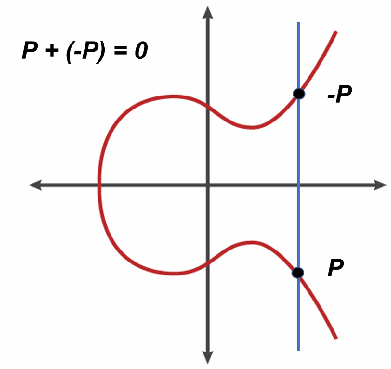
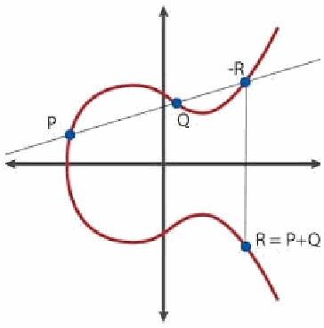
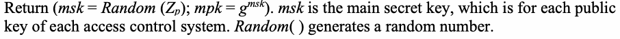
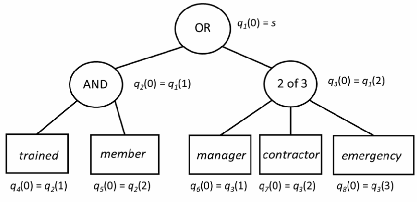

NIST IR 8450 日本語訳
英語タイトル : Overview and Considerations of Access Control Based on Attribute Encryption日本語タイトル : 属性ベース暗号に基づくアクセス制御の概要と考慮事項
公開日 : 2023-12-20
原文URL : https://csrc.nist.gov/pubs/ir/8450/upd1/final
翻訳編集 : 自動生成（有志による非公式の日本語訳）, 原文取得日 : 2026-10-31, 訳文 : 424 / 425 ブロック
[要約] NIST IR 8450 は、属性ベース暗号（ABE）に基づくアクセス制御の概要と考慮事項を示す報告書です。従来の公開鍵暗号ではデータごとに異なる鍵が必要で、データへのアクセスが「すべてか無か」になるという制約があるのに対し、ABE はアクセス制御ポリシーと属性を暗号化・復号の機能に組み込みます。ABE は公開鍵暗号よりも少ない鍵で済む一対多の認可方式を備え、結託耐性も活用して、より効率的で柔軟な属性ベースのアクセス制御の仕組みを提供するとされています。対象となるシステムとして、クラウド、IoT、途絶耐性ネットワーク、無線センサーネットワーク、モバイルアドホックネットワーク、公開検索サービスシステムなどが挙げられています。
NIST Internal Report NIST IR 8450-upd1
NIST 内部報告書 NIST IR 8450-upd1
Overview and Considerations of Access Control Based on Attribute Encryption
属性ベース暗号に基づくアクセス制御の概要と考慮事項
Vincent C. Hu
Vincent C. Hu
This publication is available free of charge from: https://doi.org/10.6028/NIST.IR.8450-upd1
本刊行物は次の場所から無料で入手できます: https://doi.org/10.6028/NIST.IR.8450-upd1
NIST Internal Report NIST IR 8450-upd1
NIST 内部報告書 NIST IR 8450-upd1
Overview and Considerations of Access Control Based on Attribute Encryption
属性ベース暗号に基づくアクセス制御の概要と考慮事項
Vincent C. Hu Computer Security Division Information Technology Laboratory
Vincent C. Hu Computer Security Division（コンピュータセキュリティ部門） Information Technology Laboratory（情報技術ラボラトリー）
This publication is available free of charge from: https://doi.org/10.6028/NIST.IR.8450-upd1
本刊行物は次の場所から無料で入手できます: https://doi.org/10.6028/NIST.IR.8450-upd1
September 2023
2023 年 9 月
INCLUDES UPDATES AS OF 12-20-2023; SEE APPENDIX A
2023 年 12 月 20 日時点の更新を含みます。付録 A を参照
［米国商務省の紋章。公的な標章のため、この非公式サイトには掲載していません。原本 PDF を参照してください。］
U.S. Department of Commerce Gina M. Raimondo, Secretary
U.S. Department of Commerce（米国商務省） Gina M. Raimondo, 長官
National Institute of Standards and Technology
National Institute of Standards and Technology（国立標準技術研究所）
Laurie E. Locascio, NIST Director and Under Secretary of Commerce for Standards and Technology
Laurie E. Locascio, NIST所長および商務省標準技術担当次官
Certain commercial equipment, instruments, software, or materials, commercial or non-commercial, are identified in this paper in order to specify the experimental procedure adequately. Such identification does not imply recommendation or endorsement of any product or service by NIST, nor does it imply that the materials or equipment identified are necessarily the best available for the purpose.
本稿では、実験手順を適切に示すために、特定の商用機器、計器、ソフトウェア、材料が、商用か非商用かを問わず挙げられています。このように挙げることは、NIST がいかなる製品やサービスも推奨または保証することを意味せず、また、挙げられた材料や機器がその目的に対して必ずしも最良であることを意味するものでもありません。
There may be references in this publication to other publications currently under development by NIST in accordance with its assigned statutory responsibilities. The information in this publication, including concepts and methodologies, may be used by federal agencies even before the completion of such companion publications. Thus, until each publication is completed, current requirements, guidelines, and procedures, where they exist, remain operative. For planning and transition purposes, federal agencies may wish to closely follow the development of these new publications by NIST.
本刊行物には、NIST が法定の責務に従って現在策定中のほかの刊行物への言及が含まれる場合があります。概念や方法論を含む本刊行物の情報は、そうした関連刊行物の完成前であっても、連邦政府機関が利用できます。したがって、各刊行物が完成するまでは、既存の現行の要件、ガイドライン、手順が引き続き有効です。計画および移行のため、連邦機関は、NIST によるこれらの新しい刊行物の策定状況を注意深く追うことを検討してもよいです。
Organizations are encouraged to review all draft publications during public comment periods and provide feedback to NIST. Many NIST cybersecurity publications, other than the ones noted above, are available at https://csrc.nist.gov/publications.
組織は、すべてのドラフト刊行物についてパブリックコメント期間中に内容を確認し、NIST にフィードバックを寄せることが推奨されます。上記以外にも、NIST の多くのサイバーセキュリティ刊行物が https://csrc.nist.gov/publications で入手できます。
NIST Technical Series Policies
NIST 技術シリーズの方針
Copyright, Use, and Licensing Statements
著作権、使用、ライセンスに関する声明
NIST Technical Series Publication Identifier Syntax
NIST 技術シリーズ刊行物識別子の構文
Publication History
刊行の経緯
Approved by the NIST Editorial Review Board on 2023-12-19
2023-12-19 に NIST 編集審査委員会により承認
Supersedes NIST Internal Report 8450 (September 2023) https://doi.org/10.6028/NIST.IR.8450
NIST Internal Report 8450（2023 年 9 月）に代わる刊行物 https://doi.org/10.6028/NIST.IR.8450
How to Cite this NIST Technical Series Publication:
本 NIST 技術シリーズ刊行物の引用方法:
Hu VC (2023) Overview and Considerations of Access Control Based on Attribute Encryption. (National Institute of Standards and Technology, Gaithersburg, MD), NIST Interagency or Internal Report (IR) NIST IR 8450-upd1, Includes updates as of December 20, 2023. https://doi.org/10.6028/NIST.IR.8450-upd1
Hu VC (2023) Overview and Considerations of Access Control Based on Attribute Encryption. (National Institute of Standards and Technology, Gaithersburg, MD), NIST Interagency or Internal Report (IR) NIST IR 8450-upd1, Includes updates as of December 20, 2023. https://doi.org/10.6028/NIST.IR.8450-upd1
Author ORCID iDs
著者の ORCID iD
Vincent C. Hu: 0000-0002-1646-0584
Vincent C. Hu: 0000-0002-1646-0584
Contact Information
連絡先
ir8450-comments@nist.gov
ir8450-comments@nist.gov
National Institute of Standards and Technology Attn: Computer Security Division, Information Technology Laboratory 100 Bureau Drive (Mail Stop 8930) Gaithersburg, MD 20899-8930
National Institute of Standards and Technology 宛: Computer Security Division, Information Technology Laboratory 100 Bureau Drive (Mail Stop 8930) Gaithersburg, MD 20899-8930
All comments are subject to release under the Freedom of Information Act (FOIA).
寄せられたコメントはすべて、情報自由法（FOIA）に基づいて公開される場合があります。
Abstract
概要
Encryption technology can be incorporated into access control mechanisms based on user identities, user attributes, or resource attributes. Traditional public-key encryption requires different data to have different keys that can be distributed to users who satisfy perspective access control policies along with the encrypted version of the data. However, some distributed or pervasive system environments wish to avoid the public-key encryption’s all-or-nothing data access limitation when considering their performance requirements. Attribute-based encryption incorporates access control policies and attributes with encryption and decryption functions and a one-to-many authorization scheme that requires fewer keys than public-key encryption. It also utilizes collusion-resistance, which provides a more efficient and flexible attribute-based access control mechanism that supports high-performance systems (e.g., cloud, IoT, disrupt-tolerant networks, wireless sensor networks, mobile ad-hoc networks, and public search service systems).
暗号技術は、ユーザーのアイデンティティ、ユーザーの属性、またはリソースの属性に基づくアクセス制御機構に組み込むことができます。従来の公開鍵暗号では、データごとに異なる鍵が必要であり、暗号化されたデータとともに、想定されるアクセス制御ポリシーを満たすユーザーにそれらの鍵を配布できます。しかし、分散システムや広域に展開されたシステム環境の中には、性能要件を考慮し、公開鍵暗号が持つデータアクセスの「すべてか無か」という制約を避けたいものがあります。属性ベース暗号は、アクセス制御ポリシーと属性を暗号化・復号機能に組み込み、公開鍵暗号より少ない鍵で済む一対多の認可方式を採用しています。また、結託耐性を利用しており、高性能システム（クラウド、IoT、途絶耐性ネットワーク、無線センサーネットワーク、モバイルアドホックネットワーク、公開検索サービスシステムなど）をサポートする、より効率的で柔軟な属性ベースのアクセス制御機構を提供します。
Keywords
キーワード
access control; attribute-based access control; attribute-based encryption; authorization; encryptions; identity-based encryption; public-key encryption.
access control; attribute-based access control; attribute-based encryption; authorization; encryptions; identity-based encryption; public-key encryption.
Reports on Computer Systems Technology
コンピュータシステム技術に関する報告書
The Information Technology Laboratory (ITL) at the National Institute of Standards and Technology (NIST) promotes the U.S. economy and public welfare by providing technical leadership for the Nation’s measurement and standards infrastructure. ITL develops tests, test methods, reference data, proof-of-concept implementations, and technical analyses to advance the development and productive use of information technology. ITL’s responsibilities include the development of management, administrative, technical, and physical standards and guidelines for the cost-effective security and privacy of other than national security-related information in federal information systems.
国立標準技術研究所（NIST）の情報技術ラボラトリー（ITL）は、国の測定・標準インフラに対する技術的リーダーシップを提供することで、米国の経済と公共の福祉を促進しています。ITL は、情報技術の発展と生産的な利用を進めるため、テスト、テスト方法、参照データ、概念実証の実装、技術的分析を開発しています。ITL の責務には、連邦情報システムにおける国家安全保障関連以外の情報の、費用対効果の高いセキュリティとプライバシーのための管理上、事務上、技術上、物理上の標準およびガイドラインの策定が含まれます。
Patent Disclosure Notice
特許開示に関する通知
NOTICE: ITL has requested that holders of patent claims whose use may be required for compliance with the guidance or requirements of this publication disclose such patent claims to ITL. However, holders of patents are not obligated to respond to ITL calls for patents and ITL has not undertaken a patent search in order to identify which, if any, patents may apply to this publication.
通知: ITL は、本刊行物のガイダンスまたは要件への準拠に使用が必要となる可能性のある特許クレームの保有者に対し、当該特許クレームを ITL に開示するよう求めています。ただし、特許の保有者には ITL の特許募集に応じる義務はなく、ITL は、本刊行物に適用される特許があるかどうか、あるとすればどれかを特定するための特許調査を行っていません。
As of the date of publication and following call(s) for the identification of patent claims whose use may be required for compliance with the guidance or requirements of this publication, no such patent claims have been identified to ITL.
刊行日の時点で、本刊行物のガイダンスまたは要件への準拠に使用が必要となる可能性のある特許クレームの特定を求めた後も、そのような特許クレームは ITL に対して特定されていません。
No representation is made or implied by ITL that licenses are not required to avoid patent infringement in the use of this publication.
本刊行物の使用において特許侵害を避けるためにライセンスが不要であるとの表明を、ITL が行ったり示唆したりするものではありません。
Table of Contents
目次
List of Figures
図の一覧
List of Tables
表の一覧
Acknowledgments
謝辞
The author would like to express his thanks to Lily Chen, Isabel Van Wyk, and Jim Foti of NIST, Alex Leadbeater of Maketh Secure, Giovanni Bartolomeo of CNIT, and Laure Pourcin of ETSI for their reviews of both the public comment version as well as the final publication.
著者は、公開コメント版と最終刊行版の両方をレビューしてくれた、NIST の Lily Chen、Isabel Van Wyk、Jim Foti、Maketh Secure の Alex Leadbeater、CNIT の Giovanni Bartolomeo、ETSI の Laure Pourcin に感謝します。
Executive Summary
エグゼクティブサマリー
Traditional public-key encryption (PKE) requires different data to have different keys that can be distributed to users who satisfy access control policies along with the encrypted version of the data. With user-specific keys, communication complexity is linear to the number of users, and pre-distributed keys are neither bound to the attributes of users and data nor to the respective access control policy. If access policies or attributes change dynamically (especially in real time), keys need to change as well, which could cause inefficient performance in the system. Combining cryptography with access control mechanisms can avoid the PKE’s all-or-nothing limitation of keys and improve performance. Encryption technology that is typically used for key exchange, digital signature, and certification can be incorporated into access control mechanisms based on user identities, user attributes, and resource attributes.
従来の公開鍵暗号（PKE）では、異なるデータごとに異なる鍵が必要であり、その鍵は暗号化されたデータとともに、アクセス制御ポリシーを満たすユーザーに配布できます。ユーザー固有の鍵を用いる場合、通信の複雑さはユーザー数に対して線形となり、事前配布された鍵は、ユーザーとデータの属性にも、それぞれのアクセス制御ポリシーにも結び付いていません。アクセス制御ポリシーや属性が動的に（特にリアルタイムで）変化すると、鍵も変更する必要があり、システムの性能が非効率になる可能性があります。暗号技術をアクセス制御機構と組み合わせることで、PKE における鍵の「すべてか無か」という制約を回避し、性能を向上させることができます。通常、鍵交換、デジタル署名、証明に用いられる暗号技術を、ユーザーのアイデンティティ、ユーザーの属性、リソースの属性に基づくアクセス制御機構に組み込むことができます。
Attribute-based encryption (ABE) incorporates access control policies and attributes into encryption and decryption functions for public-key cryptography protocols through broadcasting. Fewer keys are used for ABE than for traditional PKE, which allows it to be an efficient and flexible attribute-based access control method.
属性ベース暗号（ABE）は、ブロードキャストを通じて、公開鍵暗号プロトコルの暗号化・復号の機能にアクセス制御ポリシーと属性を組み込みます。ABE は従来の PKE よりも使用する鍵が少なく、効率的で柔軟な属性ベースのアクセス制御方法となります。
The main features of ABE access control include:
ABE によるアクセス制御の主な特徴は、次のとおりです。
•A one-to-many authorization scheme
•一対多の認可方式
•Fine-grained access control based on user (i.e., subject) or resource (i.e., object) attributes
•ユーザー（すなわちサブジェクト）またはリソース（すなわちオブジェクト）の属性に基づく、きめ細かいアクセス制御
•Message sending without obtaining public-key certificates from public-key infrastructure
•公開鍵基盤から公開鍵証明書を取得せずにメッセージを送信できる
•Data decryption without evaluating permissions from access control policy
•アクセス制御ポリシーによる許可の評価を行わずにデータを復号できる
•Collusion-resistance so that a user who holds multiple keys cannot combine different keys to access a resource that is only allowed by one key
•結託耐性により、複数の鍵を保持するユーザーが、異なる鍵を組み合わせて、1 つの鍵でのみ許可されているリソースにアクセスすることはできない
The fine-grained and collusion-resistant features of ABE support the physical resources and performance demands of systems like the cloud, Internet of Things (IoT), disrupt-tolerant networks, wireless sensor networks, mobile ad hoc networks, and public search service systems.
ABE のきめ細かさと結託耐性という特徴により、クラウド、IoT（モノのインターネット）、途絶耐性ネットワーク、無線センサーネットワーク、モバイルアドホックネットワーク、公開検索サービスシステムといったシステムの物理的なリソースと性能要求をサポートできます。
1. Introduction
1. はじめに
Traditional public-key encryption (PKE) requires different data to have different keys that – along with the encrypted version of the data – can be distributed to users who satisfy access control policies. With user-specific keys, the communication complexity is linear to the number of users, and pre-distributed keys are neither bound to the attributes of users and data nor to the respective access control policy. Therefore, if access policies or attributes change dynamically (especially in real time), then keys need to change as well, which could cause the system’s performance to become inefficient [GOLIC]. Combining cryptography with access control mechanisms can help avoid the PKE’s all-or-nothing limitation of keys and lead to more efficient performance. To that end, encryption technology that is typically used for key exchange, digital signatures, and certification can be incorporated into access control mechanisms that are based on user identities, user attributes, and resource attributes.
従来の公開鍵暗号（PKE）では、データごとに異なる鍵が必要で、その鍵は、暗号化されたデータとともに、アクセス制御ポリシーを満たすユーザーに配布されます。ユーザー固有の鍵では、通信の計算量はユーザー数に対して線形になり、事前に配布された鍵は、ユーザーやデータの属性にも、対応するアクセス制御ポリシーにも結び付いていません。したがって、アクセスポリシーや属性が動的に（特にリアルタイムで）変わる場合は、鍵も変更する必要があり、システムの性能が非効率になる可能性があります [GOLIC]。暗号技術をアクセス制御の仕組みと組み合わせれば、PKE の鍵が持つ「すべてか無か」という制約を避けやすくなり、より効率的な性能につながります。そのために、通常は鍵交換、デジタル署名、証明に使用される暗号技術を、ユーザーのアイデンティティ、ユーザーの属性、リソースの属性に基づくアクセス制御の仕組みに組み込むことができます。
Attribute-based encryption (ABE) [GPSW] incorporates access control policies and attributes into encryption and decryption functions for public-key cryptography protocols through broadcasting. ABE encrypts only once by using a public key according to attributes associated with the access control policy. Only users hold the correct private decryption keys, which satisfies the access policies for decrypting data. ABE’s fine-grained access control mechanism is based on user (i.e., subject) attributes or data (i.e., resource) attributes. Thus, the size of ABE encrypted data and the resulting communication complexity for key distribution are linear in the number of attributes, not users. Broadcasting enables ABE to utilize fewer keys than traditional PKE schemes, which allows it to be an efficient and flexible attribute-based access control method.
属性ベース暗号（ABE）[GPSW] は、ブロードキャストを通じて、公開鍵暗号プロトコルの暗号化・復号の機能にアクセス制御ポリシーと属性を組み込みます。ABE は、アクセス制御ポリシーに関連付けられた属性に従って、公開鍵を用いて 1 回だけ暗号化します。アクセスポリシーを満たす正しい復号用秘密鍵を保持するユーザーだけが、データを復号できます。ABE のきめ細かいアクセス制御の仕組みは、ユーザー（すなわちサブジェクト）の属性またはデータ（すなわちリソース）の属性に基づきます。このため、ABE で暗号化されたデータのサイズと、その結果としての鍵配布の通信の計算量は、ユーザー数ではなく属性の数に対して線形になります。ブロードキャストにより、ABE は従来の PKE 方式よりも少ない鍵で済み、効率的で柔軟な属性ベースのアクセス制御方法となります。
The main features of ABE access control include:
ABE によるアクセス制御の主な特徴は、次のとおりです。
•A one-to-many authorization scheme.
•一対多の認可方式。
•Fine-grained access control based on user (i.e., subject) attributes or resource (i.e., object) attributes.
•ユーザー（すなわちサブジェクト）の属性またはリソース（すなわちオブジェクト）の属性に基づく、きめ細かいアクセス制御。
•Message sending without obtaining public-key certificates from public-key infrastructure.
•公開鍵基盤から公開鍵証明書を取得せずにメッセージを送信できます。
•Data decryption without evaluating permissions from access control policy.
•アクセス制御ポリシーによる許可の評価を行わずにデータを復号できます。
•Collusion-resistance so that a user who holds multiple keys cannot combine different keys to access data that are only allowed to be accessed by one key.
•結託耐性により、複数の鍵を保持するユーザーが、異なる鍵を組み合わせて、1 つの鍵でのみアクセスが許可されているデータにアクセスすることはできません。
These fine-grained and collusion-resistant features support the physical resources and performance demands of systems like the cloud, the Internet of Things (IoT), disrupt-tolerant networks, wireless sensor networks, mobile ad hoc networks, and public search service systems [ELT][SW].
これらのきめ細かさと結託耐性という特徴により、クラウド、モノのインターネット（IoT）、途絶耐性ネットワーク、無線センサーネットワーク、モバイルアドホックネットワーク、公開検索サービスシステムといったシステムの物理的なリソースと性能要求をサポートできます [ELT][SW]。
This document is organized as follows:
本書の構成は次のとおりです。
•Section 1 is the introduction.
•第 1 節は、はじめにです。
•Section 2 provides an overview of the fundamental theories that ABE is built on, including elliptic-curve cryptography, bilinear pairing, and bilinear pairing for elliptic curve cryptography.
•第 2 節では、楕円曲線暗号、双線形ペアリング、および楕円曲線暗号のための双線形ペアリングを含む、ABE の基礎理論の概要を示します。
•Section 3 introduces identity-based encryption (IBE).
•第 3 節では、アイデンティティベース暗号（IBE）を紹介します。
•Section 4 illustrates ABE algorithms for Ciphertext-Policy Attribute-Based Encryption (CP-ABE) and Key-Policy Attribute-Based Encryption (KP-ABE).
•第 4 節では、暗号文ポリシー属性ベース暗号（CP-ABE）と鍵ポリシー属性ベース暗号（KP-ABE）の ABE アルゴリズムを説明します。
•Section 5 describes considerations for the applications of ABE from the perspectives of security, performance, access control policies, and support models.
•第 5 節では、セキュリティ、性能、アクセス制御ポリシー、サポートモデルの観点から、ABE の適用にあたっての考慮事項を説明します。
•Section 6 is the conclusion.
•第 6 節は、結論です。
•Appendix A identifies changes that have been made to this publication.
•付録 A では、本刊行物に加えられた変更を示します。
2. Fundamental Theories
2. 基礎理論
The underlying function of ABE is primarily based on public-private key cryptography calculated in bilinear pairings on elliptic curve groups. This section outlines the fundamental theories of elliptic curve, elliptic-curve cryptography, bilinear group, bilinear pairing, and elliptic-curve cryptography for ABE.
ABE の基盤となる機能は、主として、楕円曲線の群上の双線形ペアリングで計算される公開鍵・秘密鍵暗号に基づいています。本節では、楕円曲線、楕円曲線暗号、双線形群、双線形ペアリング、および ABE のための楕円曲線暗号に関する基礎理論の概要を示します。
2.1. Elliptic Curve
2.1. 楕円曲線
An elliptic curve is so named for being described by cubic equations (used for calculating the circumference of an ellipse), which is of the form \(y^2 = x^3 + ax + b\) (\(y^2 + axy + by = x^3 + cx^2 + dx + e\)), where all of the coefficients are real numbers that satisfy some conditions [ROBI][SP800-186]. However, elliptic curve is not an ellipse but, rather a cubic (\(x^3\)) formed by quadratic curves. The basic specifications for elliptic curves are:
楕円曲線は、楕円の周長を計算するために用いられる三次方程式で記述されることからこの名があり、その方程式は \(y^2 = x^3 + ax + b\)（\(y^2 + axy + by = x^3 + cx^2 + dx + e\)）の形をとります。ここで、すべての係数は、ある条件を満たす実数です [ROBI][SP800-186]。ただし、楕円曲線は楕円ではなく、二次曲線によって形成される三次曲線（\(x^3\)）です。楕円曲線の基本的な仕様は次のとおりです。
1.Single elliptic curve points at infinity – or zero point – is denoted by “0”, which does not satisfy an elliptic curve equation but is needed for addition as the additive identity, \(0 = -0\). For any point \(P\) on an elliptic curve, \(P + 0 = P\). All vertical lines intersect the curve at infinity (0), and if three points on an elliptic curve lie on a straight line, their sum is 0.
1.楕円曲線の単一の無限遠点（零点）は「0」で表されます。これは楕円曲線の方程式を満たしませんが、加法単位元 \(0 = -0\) として加算に必要です。楕円曲線上の任意の点 \(P\) について、\(P + 0 = P\) です。すべての垂直線は曲線と無限遠（0）で交わり、楕円曲線上の 3 点が一直線上にある場合、それらの和は 0 になります。
2.The negative of a point \(P\) is the point with the same x coordinate but the negative of the y coordinate of the elliptic curve’s x-y coordinate. That is, if \(P = (x, y)\), then \(-P = (x, -y)\), and these two points can be joined by a vertical line such that \(P + (-P) = P - P = 0\), a point that adds a negative of itself will become an infinity point (as shown in Fig. 1). Any non-vertical line will intersect the curve in three places at most [MATA].
2.点 \(P\) の負は、楕円曲線の x-y 座標において、x 座標が同じで y 座標の符号が負である点です。すなわち、\(P = (x, y)\) ならば \(-P = (x, -y)\) であり、この 2 点は垂直線で結ぶことができるため、\(P + (-P) = P - P = 0\) となります。自身の負を加える点は、無限遠点になります（図 1 を参照）。垂直でない直線は、曲線と最大で 3 か所で交わります [MATA]。

x-y 軸上の楕円曲線（赤）のグラフです。縦の青い直線が曲線と 2 点で交わり、x 軸の上の点に「-P」、下の点に「P」のラベルがあります。左上に「P + (-P) = 0」と書かれています。
Fig. 1. \(P + (-P) = P - P = 0\) in an elliptic curve
図 1. 楕円曲線における \(P + (-P) = P - P = 0\)
3.Add distinct points \(P\) and \(Q\) in an elliptic curve if \(P \neq 0\) and \(P \neq Q\) (as shown in Fig. 2), where \(P = (x_P, y_P)\), \(Q = (x_Q, y_Q)\). If \(R = P + Q = (x_R, y_R)\), then \(x_R = s^2 - x_P - x_Q\) and \(y_R = -y_p + s(x_P - x_R)\), where \(s = (y_P - y_Q)/(x_P - x_Q)\).
3.\(P \neq 0\) かつ \(P \neq Q\) の場合に、楕円曲線上の異なる点 \(P\) と \(Q\) を加算します（図 2 を参照）。ここで、\(P = (x_P, y_P)\)、\(Q = (x_Q, y_Q)\) です。\(R = P + Q = (x_R, y_R)\) とすると、\(x_R = s^2 - x_P - x_Q\)、\(y_R = -y_p + s(x_P - x_R)\) です。ただし \(s = (y_P - y_Q)/(x_P - x_Q)\) です。

x-y 軸上の楕円曲線（赤）のグラフです。曲線上の「P」「Q」「-R」の 3 点を 1 本の直線が通り、-R から下ろした縦線が x 軸の下で曲線と交わる点に「R = P+Q」のラベルがあります。
Fig. 2. \(P + Q\) in an elliptic curve
図 2. 楕円曲線における \(P + Q\)
4.Doubling a point (also called a dot function) \(P\) (\(P + P = 2P\)) uses \(P\)’s tangent line to find the second point in the curve, which will generate a new point \(-R\) and reflect \(-R\) from x axis to give a new point \(R\) such that from 3 above, if \(y_P \neq 0\), \(2P = R\) then replaces the \(Q\) with \(P\) and replaces \(s\) with \(s = (3x_P^2 + a)/(2y_P)\) for the elliptic curve: \(y^2 = x^3 + ax + b\). Multiplying (also called dot, map, reflect) \(n\) (an integer) to a point \(P\), \(X = nP\) means that \(P + P + \ldots + P\) (\(n\) times), and the \(nP\) can be calculated by adding a doubling operation combined. For example, \(5P = \mathrm{Double}(\mathrm{Double}\ P) + P\) (i.e., \(2^2 + 1 = 5\)). For an elliptic curve point \(P\), two integers \(n\) and \(m\), \(m(nP) = n(mP)\), which is the same as the operation in a finite field \((g^y)^x = (g^x)^y\), where \(g\) is an element in a finite field and \(x\), \(y\) are integers.
4.点 \(P\) の倍算（ドット関数とも呼ばれます）（\(P + P = 2P\)）では、\(P\) の接線を使って曲線上の 2 つ目の点を求めます。これによって新しい点 \(-R\) が得られ、\(-R\) を x 軸に対して反転させると新しい点 \(R\) が得られます。上記 3 の演算から、\(y_P \neq 0\) であれば \(2P = R\) となります。この場合、\(Q\) を \(P\) に置き換え、楕円曲線 \(y^2 = x^3 + ax + b\) について \(s\) を \(s = (3x_P^2 + a)/(2y_P)\) に置き換えます。点 \(P\) に整数 \(n\) を乗じる演算（ドット、写像、反転とも呼ばれます）について、\(X = nP\) は \(P + P + \ldots + P\)（\(n\) 回）を意味します。\(nP\) は倍算と加算を組み合わせて計算できます。たとえば、\(5P = \mathrm{Double}(\mathrm{Double}\ P) + P\)（すなわち \(2^2 + 1 = 5\)）です。楕円曲線上の点 \(P\) と 2 つの整数 \(n\)、\(m\) について、\(m(nP) = n(mP)\) が成り立ちます。これは有限体における演算 \((g^y)^x = (g^x)^y\) と同じです。ここで、\(g\) は有限体の元で、\(x\)、\(y\) は整数です。
5.Order of a point \(P\) on the elliptic curve is defined to be the smallest integer \(n\) such that \(nP = 0\).
5.楕円曲線上の点 \(P\) の位数は、\(nP = 0\) となる最小の整数 \(n\) と定義されます。
6.Elliptic curve cryptography (ECC) uses elliptic curves over a finite field. \(F_z\): \(\{0 \ldots z-1\}\) is a set of points \((x, y)\) that satisfy \(y^2 = x^3 + ax + b \bmod z\), where \(z\) is a prime number \(> 3\), and \(a, b, x, y \in F_z\). For example, an elliptic curve \(y^2 = x^3 + 7 \bmod 11\), when \(x = 1\), \(y^2 = 8 \bmod 11\), but there is no integer \(y\), satisfy \(y^2 = 8 \bmod 11\). When \(x = 2\), \(y^2 = (8 + 7) \bmod 11 = 4 \bmod 11\), \(y = 2\), or \(y = 9\) can satisfy the formula, so points (2, 2) and (2, 9) are in the elliptic curve. When \(x = 3\): \(y^2 = (27 + 7)\), \(\mathrm{mod}\ 11 = 1 \bmod 11\), \(y = 1\), or 10. Continually, one can conclude that points (2, 2), (2, 9), (3,1), (3, 10), (4, 4), (4, 7), (5, 0), (6, 5), (6, 6), (7, 3), and (7, 9) are in the elliptic curve over the finite field defined by mod 11.
6.楕円曲線暗号（ECC）は、有限体上の楕円曲線を使用します。\(F_z\): \(\{0 \ldots z-1\}\) は、\(y^2 = x^3 + ax + b \bmod z\) を満たす点 \((x, y)\) の集合です。ここで \(z\) は \(> 3\) の素数であり、\(a, b, x, y \in F_z\) です。たとえば、楕円曲線 \(y^2 = x^3 + 7 \bmod 11\) では、\(x = 1\) のとき \(y^2 = 8 \bmod 11\) ですが、\(y^2 = 8 \bmod 11\) を満たす整数 \(y\) はありません。\(x = 2\) のとき、\(y^2 = (8 + 7) \bmod 11 = 4 \bmod 11\) となり、\(y = 2\) または \(y = 9\) が式を満たすため、点 (2, 2) と (2, 9) は楕円曲線上にあります。\(x = 3\) のとき、\(y^2 = (27 + 7)\), \(\mathrm{mod}\ 11 = 1 \bmod 11\) となり、\(y = 1\) または 10 です。同様に続けると、点 (2, 2)、(2, 9)、(3,1)、(3, 10)、(4, 4)、(4, 7)、(5, 0)、(6, 5)、(6, 6)、(7, 3)、(7, 9) が、mod 11 で定義される有限体上の楕円曲線上にあると結論できます。
2.2. Elliptic-Curve Cryptography
2.2. 楕円曲線暗号
Elliptic-curve cryptography (ECC) [SP800-56A][FIPS186-5] was invented by Neal Koblitz and Victor Miller in 1985 [MMSC] and standardized in Institute of Electrical and Electronics Engineers (IEEE) P1363a [IE]. The primary advantage of using elliptic-curve-based cryptography is that ECC uses a shorter key/parameter than Rivest–Shamir–Adleman (RSA)’s PKE to achieve the same security strength [MY]. This property addresses performance issues for systems that need to handle many encryption sessions at the same time, such as wireless communication devices, smart cards, web servers, and applications. These systems need security but lack the power, storage, or computational capability required for RSA’s PKE cryptographic scheme. For example, Bitcoin and Ethereum use secp256k1 elliptic curve to generate private- and public-key pairs [MOBI] for their blockchain implementations. Discrete logarithm problem (DLP) (i.e., given two points \(P\) and \(Q\) on an elliptic curve, find an integer \(n\) such that \(Q = nP\)) on an elliptic curve is a hard problem. However, ECC is more difficult to explain when compared to traditional RSA’s PKE cryptographic scheme [ROBI]. As ECC gains popularity, more applications are using it, such as Internet Key Exchange (IKE), Transport Layer Security (TLS), Tor, iMessage, Bitcoin, and Ethereum [LXYS].
楕円曲線暗号（ECC）[SP800-56A][FIPS186-5] は、1985 年に Neal Koblitz と Victor Miller によって考案され [MMSC]、米国電気電子学会（IEEE）の P1363a で標準化されました [IE]。楕円曲線に基づく暗号を使用する主な利点は、ECC が、Rivest–Shamir–Adleman（RSA）の公開鍵暗号と同じセキュリティ強度を達成するのに、より短い鍵／パラメータで済むことです [MY]。この特性は、無線通信デバイス、スマートカード、ウェブサーバー、アプリケーションなど、多くの暗号化セッションを同時に処理する必要があるシステムの性能問題に対処します。これらのシステムはセキュリティを必要としますが、RSA の公開鍵暗号方式に必要な電力、記憶容量、計算能力を持っていません。たとえば、Bitcoin と Ethereum は、ブロックチェーンの実装で秘密鍵と公開鍵のペアを生成するために、secp256k1 楕円曲線を使用しています [MOBI]。楕円曲線上の離散対数問題（DLP）（すなわち、楕円曲線上の 2 点 \(P\) と \(Q\) が与えられたとき、\(Q = nP\) となる整数 \(n\) を求める問題）は困難な問題です。ただし、ECC は、従来の RSA の公開鍵暗号方式と比べて説明が難しくなります [ROBI]。ECC が普及するにつれ、インターネット鍵交換（IKE）、Transport Layer Security（TLS）、Tor、iMessage、Bitcoin、Ethereum など、より多くのアプリケーションが ECC を使用しています [LXYS]。
The international consortium Standards for Efficient Cryptography Group (SECG) [DANI] developed commercial standards for efficient and interoperable ECC. SECG published a document with a recommend set of parameters refereed by the tuple \((p, a, b, G, n, h)\) called Elliptic Curve Domain Parameters to describe an elliptic curve used for ECC, where \(p\) is a prime number for defining the finite field such that \(F_p = \{0 \ldots p-1\}\), and \(a\) and \(b\) (usually restricted by \(4a^3 + 27 + b^2 \neq 0\)) are the coefficients of the elliptic curve equation \(y^2 = x^3 + ax + b\) [SP800-186]. \(G\) is the generator point. \(n\) is the order of the \(G\) generator (base) point (also called \(n\) torsion point), which determines the maximum value that can be turned into private key (ranging from 1 to \(n - 1\)). \(h\) equals \(N/n\) called cofactor such that \(N\) is the order of the elliptic curve (the number of points in the elliptic curve). For example, the finite field \(F_{37}\) with \(p = 37\) for the elliptic curve: \(y^2 = x^3 - x + 3 \bmod 37\) (\(a = -1\), \(b = 3\)) has order \(N = 42\). For \(n = 7 \in\) factors of \(N\) in \(\{1, 2, 3, 6, 7, 14, 21, 42\}\), the point \(P = (2, 3)\) is the base point \(G\) because \(P \neq 0\), \(2P \neq 0\), \(3P \neq 0\), \(6P \neq 0\), but \(7P = 0\). According to Lagrange’s theorem, the order of a subgroup (generated by \(G\)) is a factor of \(N\). That is, \(N = nh\). For any point \(P\) in the elliptic curve, \(NP = 0\) (i.e., \(n(hP) = 0\)). Elliptic curves defined by parameter sets have been given IDs in the standards for easier identification. For example, secp256k1 is EC \(y^2 = x^3 + 7\) (used by Bitcoin or Ethereum) [SP800-186, MOBI].
国際的なコンソーシアムである Standards for Efficient Cryptography Group（SECG）[DANI] は、効率的で相互運用可能な ECC のための商用標準を策定しました。SECG は、ECC に使用する楕円曲線を記述するため、楕円曲線ドメインパラメータと呼ばれる、タプル \((p, a, b, G, n, h)\) で表される推奨パラメータ集合を示した文書を公開しました。ここで \(p\) は有限体 \(F_p = \{0 \ldots p-1\}\) を定義する素数であり、\(a\) と \(b\) は楕円曲線の方程式 \(y^2 = x^3 + ax + b\) の係数で、通常 \(4a^3 + 27 + b^2 \neq 0\) という条件で制限されます [SP800-186]。\(G\) は生成点です。\(n\) は生成点（基点）\(G\) の位数（\(n\) 位のねじれ点とも呼ばれる）であり、秘密鍵にできる値の範囲（1 から \(n - 1\)）を決定します。\(h\) は余因子と呼ばれ、\(N/n\) に等しくなります。ここで \(N\) は楕円曲線の位数（曲線上の点の数）です。たとえば、\(p = 37\) の有限体 \(F_{37}\) 上で、楕円曲線 \(y^2 = x^3 - x + 3 \bmod 37\)（\(a = -1\)、\(b = 3\)）の位数は \(N = 42\) です。\(n = 7 \in\) \(N\) の約数の集合 \(\{1, 2, 3, 6, 7, 14, 21, 42\}\) とします。点 \(P = (2, 3)\) は、\(P \neq 0\)、\(2P \neq 0\)、\(3P \neq 0\)、\(6P \neq 0\) である一方、\(7P = 0\) であるため、基点 \(G\) です。ラグランジュの定理によれば、（\(G\) が生成する）部分群の位数は \(N\) の約数です。つまり、\(N = nh\) です。楕円曲線上の任意の点 \(P\) について、\(NP = 0\)（すなわち \(n(hP) = 0\)）です。パラメータ集合によって定義される楕円曲線には、識別しやすいように標準で ID が付けられています。たとえば、secp256k1 は EC \(y^2 = x^3 + 7\)（Bitcoin または Ethereum で使用）です [SP800-186, MOBI]。
For cryptographic usage, the elliptic curves are selected with a subgroup generated by the generator point \(G\) such that the order is a prime and large enough for targeted security strength. The steps are:
暗号に使用する場合、楕円曲線は、生成元の点 \(G\) が生成する部分群の位数が素数で、かつ目標とするセキュリティ強度に対して十分に大きくなるように選択されます。手順は次のとおりです。
1.Select an elliptic curve pseudo randomly1.
1.楕円曲線を擬似乱数的に選択する1。
2.Calculate the order \(N\) of the elliptic curve2.
2.楕円曲線の位数 \(N\) を計算する2。
3.If \(N\) has a prime factor \(n\) that is large enough to satisfy the required security strength, go to step 4. Otherwise, go back to step 1.
3.\(N\) が、必要なセキュリティ強度を満たす十分に大きな素因数 \(n\) を持つ場合は、手順 4 に進みます。そうでない場合は、手順 1 に戻ります。
4.Compute the cofactor \(h = N/n\).
4.余因子 \(h = N/n\) を計算します。
5.Choose a random point \(P\) as a candidate generator \(G\) on the curve.
5.曲線上のランダムな点 \(P\) を、生成元 \(G\) の候補として選びます。
6.Compute \(G = hP\).
6.\(G = hP\) を計算します。
7.If \(G\) is 0 (i.e., the subgroup has order 1), then go back to step 4. Otherwise, \(G\) is the generator (of a subgroup) with order \(n\) and cofactor \(h\).
7.\(G\) が 0 である場合（すなわち、部分群の位数が 1 である場合）は、手順 4 に戻ります。そうでない場合、\(G\) は、位数 \(n\)、余因子 \(h\) を持つ（部分群の）生成元です。
Note that this algorithm only works if \(n\) is a prime. If \(n\) were not a prime, then the order of \(G\) could be one of the divisors of \(n\) [CORB].
このアルゴリズムは、\(n\) が素数である場合にのみ機能することに注意してください。\(n\) が素数でなければ、\(G\) の位数は \(n\) の約数のいずれかになる可能性があります [CORB]。
In ECC, a point \(X = nG\) where \(n\) is an integer and \(G\) is the generator is used for the public key, and \(n\) is used as the private key. For example, the message from the sender to the receiver with the ciphertext \(C_m = \{KG, M + KP_{\mathit{receiver}}\}\) can be decrypted by function \(\mathit{Decrypt}(C_m)\): \(M + KP_{\mathit{receiver}} - S_{\mathit{receiver}}(KG) = M + K(S_{\mathit{receiver}}G) - S_{\mathit{receiver}}(KG) = M\), where \(M\) is the message converted to an elliptic point, \(K\) is a random number, \(KG\) is a point in the elliptic curve that can be known by everyone sent through a non-encrypted channel, \(P_{\mathit{receiver}}\) is the receiver’s public key, \(S_{\mathit{receiver}}\) is the receiver’s private key such that \(P_{\mathit{receiver}} = S_{\mathit{receiver}}G\), and “+” is elliptic curve points addition [ROBI]. ECC can also be applied to a digital signature, such as the Elliptic Curve Digital Signature Algorithm (ECDSA). Assume that the private key \(Pr = d\) is an integer. The public key \(Q = kG\) is an elliptic curve point. To sign a message \(m\), compute \(e = H(m)\), where \(H\) is a hash function, and assume that \(e\) is an integer such that \(1 < e < n\). Randomly select an integer \(k\), \(1 < k < n\) to compute \(R = kG = (x_R, y_R)\), and then convert finite field element \(x_R\) to an integer \(r\) such that \(1 < r < n\). Compute \(s = k^{-1}(e + r \cdot d) \bmod n\). The signature of \(m\) is \((r, s)\). To verify the signature \(\mathit{Sig}(m) = (r, s)\), a verifier computes \(e = H(m)\). With the signature \((r, s)\) and \(e\), the verifier computes two values \(u = e \cdot s^{-1} \bmod n\) and \(v = r \cdot s^{-1} \bmod n\) with \(u\) and \(v\) and computes an elliptic point \(R_1 = uG + vQ = (x_{R'}, y_{R'})\). Afterward, convert finite field element \(x_R\) to an integer \(r_1\) such that \(1 < r_1 < n\). If \(r = r_1\), then \((r, s)\) is a valid signature. Otherwise, it is not a valid signature. This is shown in the following steps:
ECC では、\(n\) を整数、\(G\) を生成元として、点 \(X = nG\) が公開鍵に使用され、\(n\) が秘密鍵として使用されます。たとえば、送信者から受信者への、暗号文 \(C_m = \{KG, M + KP_{\mathit{receiver}}\}\) を持つメッセージは、関数 \(\mathit{Decrypt}(C_m)\) によって復号できます。すなわち、\(M + KP_{\mathit{receiver}} - S_{\mathit{receiver}}(KG) = M + K(S_{\mathit{receiver}}G) - S_{\mathit{receiver}}(KG) = M\) です。ここで \(M\) は楕円曲線上の点に変換されたメッセージ、\(K\) は乱数、\(KG\) は暗号化されていない通信路で送られる、誰にでも知られうる楕円曲線上の点、\(P_{\mathit{receiver}}\) は受信者の公開鍵、\(S_{\mathit{receiver}}\) は受信者の秘密鍵で \(P_{\mathit{receiver}} = S_{\mathit{receiver}}G\) となるもの、「+」は楕円曲線上の点の加算です [ROBI]。ECC は、楕円曲線デジタル署名アルゴリズム（ECDSA）などのデジタル署名にも適用できます。秘密鍵 \(Pr = d\) を整数とします。公開鍵 \(Q = kG\) は楕円曲線上の点です。メッセージ \(m\) に署名するには、\(e = H(m)\) を計算します。ここで \(H\) はハッシュ関数であり、\(e\) は \(1 < e < n\) の整数であるとします。整数 \(k\)（\(1 < k < n\)）をランダムに選んで \(R = kG = (x_R, y_R)\) を計算し、次に有限体の元 \(x_R\) を、\(1 < r < n\) となる整数 \(r\) に変換します。\(s = k^{-1}(e + r \cdot d) \bmod n\) を計算します。\(m\) の署名は \((r, s)\) です。署名 \(\mathit{Sig}(m) = (r, s)\) を検証するには、検証者が \(e = H(m)\) を計算します。署名 \((r, s)\) と \(e\) を用いて、検証者は 2 つの値 \(u = e \cdot s^{-1} \bmod n\) と \(v = r \cdot s^{-1} \bmod n\) を計算し、\(u\) と \(v\) を用いて楕円曲線上の点 \(R_1 = uG + vQ = (x_{R'}, y_{R'})\) を計算します。その後、有限体の元 \(x_R\) を、\(1 < r_1 < n\) となる整数 \(r_1\) に変換します。\(r = r_1\) であれば、\((r, s)\) は有効な署名です。そうでなければ、有効な署名ではありません。手順は次のとおりです。
Parameters
パラメータ
\(G\): A generator of the elliptic curve group over a finite field with order \(n\), where \(n\) is a prime
\(G\): 位数 \(n\)（\(n\) は素数）を持つ、有限体上の楕円曲線群の生成元
\(d\): Private key, an integer, \(1 < d < n\)
\(d\): 秘密鍵。整数で、\(1 < d < n\)
\(Q\): Public key, \(Q = dG = G + G + \ldots + G\) (\(d\) times)
\(Q\): 公開鍵。\(Q = dG = G + G + \ldots + G\)（\(d\) 回）
Message to be signed
署名対象のメッセージ
\(m\): Message to be signed
\(m\): 署名対象のメッセージ
Signing
署名
1.Randomly select an integer \(k\), \(1 < k < n\), and compute \(R = kG = (x_R, y_R)\).
1.整数 \(k\)（\(1 < k < n\)）をランダムに選び、\(R = kG = (x_R, y_R)\) を計算します。
2.Convert finite field element \(x_R\) to an integer \(r\), such that \(1 < r < n\).
2.有限体の元 \(x_R\) を、\(1 < r < n\) となる整数 \(r\) に変換します。
3.Compute \(e = H(m)\). Assume that \(e = H(m)\) is an integer \(1 < e < n\).
3.\(e = H(m)\) を計算します。\(e = H(m)\) は \(1 < e < n\) の整数であるとします。
4.Compute \(s = k^{-1}(e + r \cdot d) \bmod n\).
4.\(s = k^{-1}(e + r \cdot d) \bmod n\) を計算します。
5.Output \((r, s)\) as the signature of \(m\).
5.\((r, s)\) を \(m\) の署名として出力します。
Verifying
検証
1.Compute \(e = H(m)\).
1.\(e = H(m)\) を計算します。
2.Compute \(u = e \cdot s^{-1} \bmod n\) and \(v = r \cdot s^{-1} \bmod n\).
2.\(u = e \cdot s^{-1} \bmod n\) と \(v = r \cdot s^{-1} \bmod n\) を計算します。
3.Compute \(R_1 = uG + vQ = (x_{R'}, y_{R'})\).
3.\(R_1 = uG + vQ = (x_{R'}, y_{R'})\) を計算します。
4.Convert finite field element \(x_{R'}\) to an integer \(r_1\) such that \(1 < r_1 < n\).
4.有限体の元 \(x_{R'}\) を、\(1 < r_1 < n\) となる整数 \(r_1\) に変換します。
5.If \(r = r_1\), then \((r, s)\) is a valid signature.
5.\(r = r_1\) であれば、\((r, s)\) は有効な署名です。
2.3. Bilinear Pair Mapping
2.3. 双線形写像
Based on elliptic curve cryptography, bilinear pairing cryptography can be used for the new signature scheme [ST], identity-based encryption (IBE) [BF], and attribute-based encryption (ABE) by applying bilinear pair mapping operations (i.e., bilinear pairing) on groups. For consistency of notation, this document will use \(G\) to denote a group, and elements in a group will be denoted by letters in lowercase. For instance, \(g\) will indicate a generator of \(G\). In general, a group is defined by a set of elements and an operation on the group. Section 2.2 introduced a group that consisted of points on an elliptic curve with operation addition “+”. A prime order subgroup with generator \(g\) is a cyclic group. That is, the group generated by \(g\) is \(\{0, g, 2g, \ldots, (n-1)g\}\), where \(n\) is the order of \(G\). It can define a mapping from integer group \(\{0, 1, 2, \ldots, n-1\}\) to the cyclic group such that \(f(x) = xg\) and \(f(x + y) = xg + yg\). For an integer \(n\), a group is called a cyclic group of order \(n\) if the group elements can be represented as \(\{0, g, 2g, \ldots, (n-1)g\}\) and \(ng = 0\), where \(g\) is a generator \(G\).
楕円曲線暗号に基づく双線形ペアリング暗号は、群に対して双線形写像の演算（すなわち双線形ペアリング）を適用することで、新しい署名方式 [ST]、アイデンティティベース暗号（IBE）[BF]、属性ベース暗号（ABE）に利用できます。表記を統一するため、本書では群を \(G\) で表し、群の元を小文字で表します。たとえば、\(g\) は \(G\) の生成元を示します。一般に、群は元の集合とその群上の演算によって定義されます。2.2 節では、楕円曲線上の点から成り、演算として加算「+」を持つ群を紹介しました。生成元 \(g\) を持つ素数位数の部分群は巡回群です。すなわち、\(g\) が生成する群は \(\{0, g, 2g, \ldots, (n-1)g\}\) であり、\(n\) は \(G\) の位数です。整数の群 \(\{0, 1, 2, \ldots, n-1\}\) から巡回群への写像を、\(f(x) = xg\) かつ \(f(x + y) = xg + yg\) となるように定義できます。整数 \(n\) について、群の元が \(\{0, g, 2g, \ldots, (n-1)g\}\) と表され、かつ \(ng = 0\) である場合、その群は位数 \(n\) の巡回群と呼ばれます。ここで \(g\) は \(G\) の生成元です。
Let \(G_1\) and \(G_2\) be cyclic groups of the same order (e.g., \(G_1\) and \(G_2\) are cyclic additive groups generated by \(g\) whose order is a prime \(n\)). The bilinear pairing is a computable function \(e: G_1 \times G_2 \rightarrow G_T\) that associates pairs of elements from \(G_1\) and \(G_2\) with elements in groups \(G_T\), which is a group that contains the \(n\)th roots of unity [WF]. If \((u, v)\) is a pair of elements such that \(u \in G_1\), \(v \in G_2\) are points of \(G_1\) and \(G_2\), respectively, then bilinear pairing function \(e\) takes \(u\) and \(v\) to produce a value in Group \(G_T\). Bilinear pairing has the following properties when \(a, b, c, d \in \mathrm{Z}\), and \(u \in G_1\), \(v \in G_2\), \(w\) is an element of \(G_1\) or \(G_2\) of cyclic additive groups:
\(G_1\) と \(G_2\) を同じ位数の巡回群とします（たとえば、\(G_1\) と \(G_2\) は、位数が素数 \(n\) である \(g\) が生成する巡回加法群です）。双線形ペアリングは、計算可能な関数 \(e: G_1 \times G_2 \rightarrow G_T\) であり、\(G_1\) と \(G_2\) の元の組を、群 \(G_T\) の元に対応付けます。この群は 1 の \(n\) 乗根を含みます [WF]。\((u, v)\) が、\(u \in G_1\)、\(v \in G_2\) をそれぞれ \(G_1\) と \(G_2\) の点とする元の組であれば、双線形ペアリング関数 \(e\) は \(u\) と \(v\) から群 \(G_T\) の値を生成します。\(a, b, c, d \in \mathrm{Z}\)、\(u \in G_1\)、\(v \in G_2\) で、\(w\) が巡回加法群の \(G_1\) または \(G_2\) の元であるとき、双線形ペアリングは次の性質を持ちます。
•Computing \(e(u, v)\) is efficient.
•\(e(u, v)\) の計算は効率的です。
•\(e(u + w, v) = e(u, v)e(w, v)\)
•\(e(u + w, v) = e(u, v)e(w, v)\)
•\(e(u, w + v) = e(u, w)e(u, v)\)
•\(e(u, w + v) = e(u, w)e(u, v)\)
•\(e(au, v) = e(u, av) = ae(u, v)\)
•\(e(au, v) = e(u, av) = ae(u, v)\)
•\(e(au, bv) = e(abu, v)\)
•\(e(au, bv) = e(abu, v)\)
•\(e(-u, v) = e(u, v)^{-1} = e(u, -v)\)
•\(e(-u, v) = e(u, v)^{-1} = e(u, -v)\)
•The mapping can also be \(G_1 \times G_1 \rightarrow G_T\). In such cases, a pairing is called Symmetric: \(e(u, v) = e(v, u)\) for all \(u\), \(v\).
•写像は \(G_1 \times G_1 \rightarrow G_T\) でもかまいません。この場合、ペアリングは対称と呼ばれ、すべての \(u\)、\(v\) について \(e(u, v) = e(v, u)\) となります。
•\(e(au, bv) = e(av, bu) = e(bu, av)\) when \(G_1 = G_2\), and the mapping is symmetric.
•\(G_1 = G_2\) で写像が対称である場合、\(e(au, bv) = e(av, bu) = e(bu, av)\) となります。
If \(G_1\) and \(G_2\) are cyclic multiplication groups, then:
\(G_1\) と \(G_2\) が巡回乗法群である場合は、次のとおりです。
•Computing \(e(u, v)\) is efficient.
•\(e(u, v)\) の計算は効率的です。
•\(e(u, v)^a = e(u^a, v) = e(u, v^a)\)
•\(e(u, v)^a = e(u^a, v) = e(u, v^a)\)
•\(e(u^a, v^b)\, e(u^c, v^d) = e(u, v)^{ab+cd}\) [QIAU]
•\(e(u^a, v^b)\, e(u^c, v^d) = e(u, v)^{ab+cd}\) [QIAU]
•\(e(-u, v) = e(u, v)^{-1} = e(u, -v)\)
•\(e(-u, v) = e(u, v)^{-1} = e(u, -v)\)
•\(e(uw, v) = e(u, v)e(w, v)\)
•\(e(uw, v) = e(u, v)e(w, v)\)
•The mapping can also be \(G_1 \times G_1 \rightarrow G_T\). In such cases, a pairing is called Symmetric: \(e(u, v) = e(v, u)\) for all \(u\), \(v\).
•写像は \(G_1 \times G_1 \rightarrow G_T\) でもかまいません。この場合、ペアリングは対称と呼ばれ、すべての \(u\)、\(v\) について \(e(u, v) = e(v, u)\) となります。
•\(e(u^a, v^b) = e(u^b, v^a) = e(u, v)^{ab}\) when \(G_1 = G_2\), and the mapping is symmetric [BETH].
•\(G_1 = G_2\) で写像が対称である場合、\(e(u^a, v^b) = e(u^b, v^a) = e(u, v)^{ab}\) となります [BETH]。
•If \(e(u, u)^k = 1\), then \(k\) is either 0 or a multiple of the order of the group when \(G_1 = G_2\), and the mapping is symmetric [HUBWIZ].
•\(G_1 = G_2\) で写像が対称である場合、\(e(u, u)^k = 1\) ならば、\(k\) は 0 であるか、群の位数の倍数です [HUBWIZ]。
For both addition and multiplication groups above:
上記の加法群と乗法群のどちらについても、次が成り立ちます。
•Non-degenerate property \(e(u, v) \neq\) identity for some \(u\), \(v\), which ensures that if non-identical elements are selected for \(e\), then the result of the pairing function will not be the identity of the target group. For example, assume that 0 is the identity. Then \(e(u, v) = 0\) for all points \(v\) if and only if \(u = 0\), and \(e(u, v) = 0\) for all points \(u\) if and only if \(v = 0\). Note that a degenerate property maps everything to the identity 0. That is, \(\exists\, u \neq 0, v \neq 0, e(u, v) = 0\).
•非退化性。ある \(u\)、\(v\) について \(e(u, v) \neq\) 単位元です。これにより、\(e\) に対して単位元でない元を選べば、ペアリング関数の結果が終域の群の単位元にならないことが保証されます。たとえば、0 が単位元であるとします。このとき、\(e(u, v) = 0\) がすべての点 \(v\) で成り立つのは \(u = 0\) の場合に限られ、\(e(u, v) = 0\) がすべての点 \(u\) で成り立つのは \(v = 0\) の場合に限られます。退化性ではすべてが単位元 0 に写されることに注意してください。すなわち、\(\exists\, u \neq 0, v \neq 0, e(u, v) = 0\) です。
•Skew-symmetric: \(e(u, v) = -e(v, u)\) when \(G_1 = G_2\)
•歪対称性: \(G_1 = G_2\) のとき、\(e(u, v) = -e(v, u)\)
2.4. Bilinear Pairing for Cryptography
2.4. 暗号のための双線形ペアリング
Pairing-based cryptography [MD] applies bilinear pairing, which establishes the relationship between cryptographic groups for solving Decisional Diffie-Hellman problems. Weil and Tate pairings [MEFF] were first used in an effort to break ECC. The idea was to reduce the discrete logarithm problem in elliptic curves to a discrete logarithm problem in finite fields (called a MOV reduction) [BETH]. Bilinear pairing for ECC is based on the properties that add, double, and multiply (double means adding the same element, and multiply with an integer \(k\) means adding the same element \(k\) times) elliptic curve points to form an abelian group such that the bilinear pairing \(e: G_1 \times G_2 \rightarrow G_T\) is defined by \(G_1\), \(G_2\) are subgroups of points on elliptic curves over a prime field \(F_p\), and \(G_T\) is a subgroup of the multiplicative group of a finite field that contains the \(n\)th (\(n\) is the order or the number of points in the elliptic curve) of unity in a prime field (usually 12 degrees of extension3 of a prime field). These values are not points. \(G_1\), \(G_2\), and \(G_T\) are all isomorphic to one another since they have the same order and are cyclic [BUTE][MPPRRC][IRON]. The bilinear pairing functions have the same properties as described in Section 2.3.
ペアリングベース暗号 [MD] は双線形ペアリングを適用し、判定 Diffie-Hellman 問題を解くための暗号群間の関係を確立します。Weil ペアリングと Tate ペアリング [MEFF] は、当初、ECC を破る試みで使用されました。その発想は、楕円曲線上の離散対数問題を有限体上の離散対数問題に帰着させること（MOV 帰着と呼ばれます）でした [BETH]。ECC の双線形ペアリングは、楕円曲線上の点を加算、倍算、乗算する（倍算は同じ元を加えること、整数 \(k\) による乗算は同じ元を \(k\) 回加えることを意味します）ことでアーベル群を形成する性質に基づきます。双線形ペアリング \(e: G_1 \times G_2 \rightarrow G_T\) は、\(G_1\) と \(G_2\) が素体 \(F_p\) 上の楕円曲線上の点の部分群であり、\(G_T\) が、素体における 1 の \(n\) 乗根（\(n\) は楕円曲線の位数、すなわち楕円曲線上の点の数）を含む有限体の乗法群の部分群であるものとして定義されます（通常は素体の 12 次拡大3です）。これらの値は点ではありません。\(G_1\)、\(G_2\)、\(G_T\) は同じ位数を持つ巡回群であるため、すべて互いに同型です [BUTE][MPPRRC][IRON]。双線形ペアリング関数は、2.3 節で説明したものと同じ性質を持ちます。
For this example, it is assumed that \(G_1\) and \(G_2\) are elliptic curve groups, but the notations are different from the curves. It uses \(g_1\) as a point. It should be clear that private keys are integers. Message \(M\) must be an element in \(G_T\). Moreover, it is assumed that the operation in \(G_1\) and \(G_2\) is “addition” and in \(G_T\) “multiplication”.
この例では、\(G_1\) と \(G_2\) は楕円曲線群であるとしますが、表記は曲線のものとは異なります。点として \(g_1\) を用います。秘密鍵が整数であることは明らかでしょう。メッセージ \(M\) は \(G_T\) の元でなければなりません。さらに、\(G_1\) と \(G_2\) の演算は「加算」、\(G_T\) の演算は「乗算」であるとします。
For public-key encryption, an EC key pair used for bilinear pairing is a public key (\(PK\)) = private key (\(SK\))\(g_1\), an elliptic curve point, which means that the public key is just the private key times a fixed generator point \(g_1\) in \(G_1\). For example:
公開鍵暗号の場合、双線形ペアリングに使用する EC 鍵ペアは、公開鍵（\(PK\)）＝秘密鍵（\(SK\)）\(g_1\)（楕円曲線上の点）となります。これは、公開鍵が、秘密鍵に \(G_1\) の固定された生成元の点 \(g_1\) を掛けたものにすぎないことを意味します。たとえば、次のようになります。
1.Alice generates a key pair \((SK_A, PK_A)\). Bob generates \((SK_B, PK_B)\), and both public keys are made available to public.
1.Alice は鍵ペア \((SK_A, PK_A)\) を生成します。Bob は \((SK_B, PK_B)\) を生成し、両方の公開鍵が公開されます。
2.Alice can encrypt a message \(M\) to Bob by computing \(Me(PK_B, SK_A g_2)\), where \(g_2\) is a generator point in \(G_2\). Note that \(Me(PK_B, SK_A g_2) = Me(SK_B g_1, SK_A g_2) = M e(SK_A g_1, SK_B g_2) = Me(PK_A, SK_B g_2)\).
2.Alice は、\(Me(PK_B, SK_A g_2)\) を計算することで、Bob 宛てのメッセージ \(M\) を暗号化できます。ここで \(g_2\) は \(G_2\) の生成元の点です。\(Me(PK_B, SK_A g_2) = Me(SK_B g_1, SK_A g_2) = M e(SK_A g_1, SK_B g_2) = Me(PK_A, SK_B g_2)\) となることに注意してください。
3.Bob can recover \(M\) by computing \(Me(PK_A, SK_B g_2)\, e(PK_A, -SK_B g_2) = M e(PK_A, (SK_B - SK_B) g_2) = Me(PK_A, 0) = M\).
3.Bob は、\(Me(PK_A, SK_B g_2)\, e(PK_A, -SK_B g_2) = M e(PK_A, (SK_B - SK_B) g_2) = Me(PK_A, 0) = M\) を計算することで、\(M\) を復元できます。
Note that \(M\) must be an element in \(G_T\), the operation in \(G_1\) and \(G_2\) is assumed to be addition, and \(G_T\) is assumed to be multiplication.
\(M\) は \(G_T\) の元でなければならず、\(G_1\) と \(G_2\) の演算は加算、\(G_T\) の演算は乗算であるとしていることに注意してください。
Bilinear pairing also works for message signatures. For example, Alex signs her message and sends it to Bob such that Alex generates \(SKg =\) public key \(PK\), signature \(C = SKH(M)\), where \(SK\) is Alex’s secret key, \(g\) is the generator of elliptic curve that is publicly known, \(M\) is the message Alex signed, and \(H\) is a hash function for hashing message \(M\) to another point in the elliptic curve. Bob receives \(C\), \(PK\), \(H(M)\) and then calculates to check whether the pair mapping \(e\) of \(g\) and \(C\) equal the pair mapping of \(PK\) and \(H(M)\) for Alex’s signature of \(M\): \(e(g, C) = e(PK, H(M)) = e(g, SKH(M)) = e(SKg, H(M)) = e(PK, H(M))\). If so, the signature is verified.
双線形ペアリングは、メッセージの署名にも使えます。たとえば、Alex が自分のメッセージに署名して Bob に送る場合、Alex は \(SKg =\) 公開鍵 \(PK\)、署名 \(C = SKH(M)\) を生成します。ここで \(SK\) は Alex の秘密鍵、\(g\) は公開されている楕円曲線の生成元、\(M\) は Alex が署名したメッセージ、\(H\) はメッセージ \(M\) を楕円曲線上の別の点にハッシュするハッシュ関数です。Bob は \(C\)、\(PK\)、\(H(M)\) を受け取り、Alex による \(M\) の署名を検証するため、\(g\) と \(C\) のペア写像 \(e\) が \(PK\) と \(H(M)\) のペア写像に等しいかどうかを、\(e(g, C) = e(PK, H(M)) = e(g, SKH(M)) = e(SKg, H(M)) = e(PK, H(M))\) を計算して確認します。等しければ、署名が検証されます。
In addition to public-key encryption, bilinear pairing is useful for functional encryption, which is a generalization of public-key encryption in which possessing a secret key allows one to learn a function of what the ciphertext is encrypting. It provides a mechanism for accessing the function of the data without revealing actual data values. For example, if Alice wants to prove to Bob that she knew the answer of \(x + y\) without revealing the value of \(x\) and \(y\), she can send \(xg_2\) and \(yg_2\) to Bob, who then calculates \(A = e(g_1, xg_2)e(g_1, yg_2)\), where \(g_1\) and \(g_2\) are generator points of elliptic curve groups \(G_1\) and \(G_2\). Since Bob knows the value of \(x + y\), he can check whether \(e(g_1, g_2)^{x + y}\) is equal to \(A\) to prove that Alex indeed knows the value of \(x\) and \(y\) [SHINDE][BSW2011] [BSW2012][BUCH].
双線形ペアリングは、公開鍵暗号のほかに関数型暗号にも有用です。関数型暗号は公開鍵暗号を一般化したもので、秘密鍵を持つことで、暗号文が暗号化している内容の関数値を知ることができます。実際のデータ値を明らかにせずに、データの関数にアクセスする仕組みを提供します。たとえば、Alice が、\(x\) と \(y\) の値を明かさずに、\(x + y\) の答えを知っていることを Bob に証明したい場合、Alice は \(xg_2\) と \(yg_2\) を Bob に送ります。Bob は \(A = e(g_1, xg_2)e(g_1, yg_2)\) を計算します。ここで \(g_1\) と \(g_2\) は楕円曲線群 \(G_1\) と \(G_2\) の生成元の点です。Bob は \(x + y\) の値を知っているため、\(e(g_1, g_2)^{x + y}\) が \(A\) に等しいかどうかを確認することで、Alex が確かに \(x\) と \(y\) の値を知っていることを証明できます [SHINDE][BSW2011] [BSW2012][BUCH]。
Note that general ECC and bilinear pairing use different curves based on different security assumptions and have different trust models, as listed in Table 1.
一般的な ECC と双線形ペアリングでは、表 1 に示すように、異なるセキュリティ前提に基づく異なる曲線が使用され、信頼モデルも異なることに注意してください。
Table 1. Elliptic curve used for general ECC and bilinear pairing.
表 1. 一般的な ECC と双線形ペアリングに用いる楕円曲線。
| General ECC | Pairing (IBE or ABE) | |
|---|---|---|
| Elliptic curve | Often use pre-defined Montgomery Curves or Edward curves. They do not have a small embedding degree. ECC cannot use supersingular curves. | Curves with embedding degree \(k\), where \(k\) is small to make it pairing friendly. It can use supersingular curves. |
| Security assumptions | Discrete logarithm or Computational/Decisional Diffie-Hellman | Bilinear Diffie-Hellman (BDH) Problem |
| Trust models | PKI uses certificate authority (CA) as a trusted party, but CA does not access the private key. | Parameters need to be certified by a trusted third party (e.g., PKI). The private key for each party is generated by a key generator that accesses everyone’s private key. |
| 一般的な ECC | ペアリング（IBE または ABE） | |
|---|---|---|
| 楕円曲線 | 多くの場合、事前に定義された Montgomery 曲線または Edwards 曲線を使用します。これらは小さな埋め込み次数を持ちません。ECC は超特異曲線を使用できません。 | 埋め込み次数 \(k\) を持つ曲線。\(k\) は、ペアリングに適するよう小さくなっています。超特異曲線を使用できます。 |
| セキュリティ前提 | 離散対数、または計算量／決定 Diffie-Hellman | 双線形 Diffie-Hellman（BDH）問題 |
| 信頼モデル | PKI は認証局（CA）を信頼される第三者として使用しますが、CA は秘密鍵にアクセスしません。 | パラメータは、信頼される第三者（例: PKI）によって認証される必要があります。各当事者の秘密鍵は、全員の秘密鍵にアクセスする鍵生成器によって生成されます。 |
3. Identity-Based Encryption
3. アイデンティティベース暗号
Identity-based encryption (IBE) is a functional encryption proposed by Adi Shamir in 1984 [ADI] that requires a trusted key generator to publish a main4 public key and retains the corresponding main private key (i.e., main key). The key generator allows any IBE user to generate a public key by combining the main public key with the user’s identity value in text, such as an email address, name, or home address. The key generator also uses the main private key to generate the corresponding private key from the user’s identity value. Thus, users may encrypt messages sent to other users without the prior distribution of a public key to other users. To decrypt or sign messages, the authorized user needs to obtain the appropriate private key from the key generator.
アイデンティティベース暗号（IBE）は、1984 年に Adi Shamir が提案した関数型暗号 [ADI] で、信頼される鍵生成器が、主4公開鍵を公開し、対応する主秘密鍵（すなわち主鍵）を保持する必要があります。鍵生成器により、IBE のどのユーザーも、主公開鍵と、電子メールアドレス、氏名、自宅住所などのテキスト形式のユーザーのアイデンティティ値を組み合わせて、公開鍵を生成できます。鍵生成器は、主秘密鍵を使用して、ユーザーのアイデンティティ値から対応する秘密鍵も生成します。このため、ユーザーは、ほかのユーザーに公開鍵を事前に配布することなく、ほかのユーザー宛てのメッセージを暗号化できます。メッセージを復号または署名するには、認可されたユーザーが鍵生成器から適切な秘密鍵を取得する必要があります。
The Boneh-Franklin IBE encryption scheme [BF] applies the Weil pairing on elliptic curve over finite fields for setting up key management for public-key and private-key pairs from user identities for encrypting and decrypting messages, as constructed in the following.
Boneh-Franklin の IBE 暗号方式 [BF] は、有限体上の楕円曲線に Weil ペアリングを適用して、ユーザーのアイデンティティから、メッセージの暗号化と復号のための公開鍵と秘密鍵のペアの鍵管理を設定します。構成は次のとおりです。
The bilinear pairing function \(e: G \times G \rightarrow G_T\), where \(g\) is the generator of \(G\), and \(p\) is the order of \(G\) and \(G_T\). The parameters are:
双線形ペアリング関数は \(e: G \times G \rightarrow G_T\) であり、\(g\) は \(G\) の生成元、\(p\) は \(G\) と \(G_T\) の位数です。パラメータは次のとおりです。
Identity \(I \in \{0, 1\}^*\) for message sender
メッセージ送信者のアイデンティティ \(I \in \{0, 1\}^*\)
Message \(M \in \{0, 1\}^m\)
メッセージ \(M \in \{0, 1\}^m\)
Hash function \(H: \{0, 1\}^* \rightarrow G\)
ハッシュ関数 \(H: \{0, 1\}^* \rightarrow G\)
Extract function \(Q: G_T \rightarrow \{0, 1\}^m\)
抽出関数 \(Q: G_T \rightarrow \{0, 1\}^m\)
Functions include:
関数は次のとおりです。
Set up ( ) (by trusted key management server):
セットアップ ( )（信頼される鍵管理サーバーによる）:
Return \((\mathit{msk} = \mathit{Random}(Z_p); \mathit{mpk} = g^{\mathit{msk}})\). \(\mathit{msk}\) is the main secret key, which is for each public key of each access control system. \(\mathit{Random}()\) generates a random number.
原本PDFの抜粋画像

\((\mathit{msk} = \mathit{Random}(Z_p); \mathit{mpk} = g^{\mathit{msk}})\) を返します。\(\mathit{msk}\) は主秘密鍵で、各アクセス制御システムの各公開鍵に対するものです。\(\mathit{Random}()\) は乱数を生成します。
Key generation\((\mathit{mpk}, \mathit{msk}, I)\) (by trusted key management server for message receiver):
鍵生成 \((\mathit{mpk}, \mathit{msk}, I)\)（信頼される鍵管理サーバーによる、メッセージ受信者向け）:
Return \(\mathit{sk} = H(I)^{\mathit{msk}}\); \(\mathit{sk}\) is a private key for each identity.
\(\mathit{sk} = H(I)^{\mathit{msk}}\) を返します。\(\mathit{sk}\) は各アイデンティティに対する秘密鍵です。
Encryption\((\mathit{mpk}, I, M)\) (for message sender):
暗号化 \((\mathit{mpk}, I, M)\)（メッセージ送信者による）:
\(r = \mathit{Random}(Z_p);\ R = g^r;\ K = e(\mathit{mpk}, H(I)^r);\ W = Q(K) \oplus M;\ \mathit{Return}(R, W)\)
\(r = \mathit{Random}(Z_p);\ R = g^r;\ K = e(\mathit{mpk}, H(I)^r);\ W = Q(K) \oplus M;\ \mathit{Return}(R, W)\)
Decryption\((\mathit{mpk}, \mathit{sk}, R, W)\) (for message receiver):
復号 \((\mathit{mpk}, \mathit{sk}, R, W)\)（メッセージ受信者による）:
\(L = e(R, \mathit{sk})\); Return \(M = Q(L) \oplus W\); because \(M = Q(L) \oplus Q(K) \oplus M\), and \(L = K\) from the following:
\(L = e(R, \mathit{sk})\)。\(M = Q(L) \oplus W\) を返します。これは、\(M = Q(L) \oplus Q(K) \oplus M\) であり、次のとおり \(L = K\) であるためです。
\(L = e(R, \mathit{sk}) = e(g^r, H(I)^{\mathit{msk}}) = e(g^{\mathit{msk}}, H(I)^r) = e(\mathit{mpk}, H(I)^r) = K\), where \(H(\,)\) is a hash function. (Assume \(H(I) = g^x\) for some \(x\)) [MIHIR].
\(L = e(R, \mathit{sk}) = e(g^r, H(I)^{\mathit{msk}}) = e(g^{\mathit{msk}}, H(I)^r) = e(\mathit{mpk}, H(I)^r) = K\)。ここで \(H(\,)\) はハッシュ関数です（ある \(x\) について \(H(I) = g^x\) と仮定する）[MIHIR]。
Further, IBE offers the capability to encode additional information into identities. For example, a sender can specify the expiration date of a message by appending a timestamp to the recipient’s identity (e.g., through some formal protocol, like X.509). The receiver asks to retrieve the private key from the key manager (usually the key generator), who can evaluate the identity and decline the request if the expiration date has passed. Generally, embedding information in the identity provides an extra channel between the sender and the key manager with authenticity guaranteed in addition to the private key. The benefits of applying IBE can be demonstrated by an IBE email system:
さらに、IBE には、追加情報をアイデンティティに符号化する能力があります。たとえば、送信者は、受信者のアイデンティティにタイムスタンプを付加する（X.509 などの何らかの正式なプロトコルを通じて）ことで、メッセージの有効期限を指定できます。受信者は鍵管理者（通常は鍵生成器）に秘密鍵の取得を要求し、鍵管理者はアイデンティティを評価して、有効期限が過ぎていれば要求を拒否できます。一般に、アイデンティティに情報を埋め込むと、秘密鍵に加えて、送信者と鍵管理者の間に真正性が保証された追加の経路が得られます。IBE を適用する利点は、IBE による電子メールシステムで示すことができます。
•Senders can send mail to recipients who have not yet set up a public key.
•送信者は、まだ公開鍵を設定していない受信者にメールを送ることができます。
•When sending email, there is no need for an online lookup to obtain the recipient’s certificate.
•電子メールの送信時に、受信者の証明書を取得するためのオンライン検索が不要です。
•Senders can send email that can only be read at some specified time in the future.
•送信者は、将来の指定した時刻になって初めて読めるようになる電子メールを送ることができます。
•The system can proactively refresh the recipient’s private key for a short time period [BONEH].
•システムは、短い期間で受信者の秘密鍵を能動的に更新できます [BONEH]。
Note that the key generator can access the encrypted data for any receiver, and communications between the key generator and the receiver must be protected.
鍵生成器は、どの受信者向けの暗号化されたデータにもアクセスできること、また鍵生成器と受信者の間の通信は保護しなければならないことに注意してください。
4. Attribute-Based Encryption
4. 属性ベース暗号
Attribute-based encryption (ABE) stems from IBE and is an encryption scheme that combines the principles of attribute-based access control [SP800-162] with the mechanisms of public-key cryptography. ABE allows data owners and data consumers to encrypt and decrypt data based on their attributes (e.g., organization, location, position) from which public and private keys are derived through a third-party key manager. ABE eliminates the need for public-key distribution and certification, and the authenticity of the public keys is implicitly guaranteed as long as the transport of the private keys to the corresponding user is secure. ABE is especially useful for the system environment that requires pre-distribution of authenticated keys due to technical limitations.
属性ベース暗号（ABE）は IBE から派生したもので、属性ベースのアクセス制御 [SP800-162] の原則を、公開鍵暗号の仕組みと組み合わせた暗号方式です。ABE により、データ所有者とデータ利用者は、自らの属性（組織、場所、役職など）に基づいてデータを暗号化・復号できます。公開鍵と秘密鍵は、これらの属性から、サードパーティの鍵管理者を通じて導出されます。ABE は公開鍵の配布と認証の必要性をなくし、対応するユーザーへの秘密鍵の転送が安全である限り、公開鍵の真正性が暗黙的に保証されます。ABE は、技術的な制約により、認証済みの鍵の事前配布が必要となるシステム環境で特に有用です。
ABE has the following basic properties:
ABE には、次の基本的な特性があります。
•Encryption time and ciphertext size are linear to the number of attributes involved.
•暗号化時間と暗号文のサイズは、関与する属性の数に対して線形です。
•Collusion resistance means that it is impossible to decrypt any ciphertext for any new attribute set (CP-ABE) or new access policy (KP-ABE) by giving any number of randomized private keys.
•結託耐性とは、任意の数のランダム化された秘密鍵を与えても、新しい属性集合（CP-ABE）または新しいアクセスポリシー（KP-ABE）に対するいかなる暗号文も復号できないことを意味します。
•Randomized encryption prevents users from distinguishing repeated encryptions of the same message for privacy [GOLIC].
•ランダム化された暗号化により、ユーザーは、プライバシー保護のため、同じメッセージの繰り返しの暗号化を区別できません [GOLIC]。
Popular distributed systems, such as cloud and IoT, make it possible for users to access dynamic resources in flexible environments. However, their growth and the ubiquity of mobile devices for data access have generated new security and performance challenges. Many studies have been conducted on ABE, such as applying it to distributed systems [HL] for its one-to-many cryptographic scheme as well as the capability to store, transmit, and retrieve high-dimensional data with low computational time and high security. This shows that ABE can address security and privacy issues in outsourced and pervasive data access environments [ZDXSLZ]. For example, for the large attribute universe of a cloud system, ABE allows data owners to compose access control policies based on their applications so that they can provide delegation capabilities to data users [BS]. However, the implementation of ABE requires complex support infrastructures – including key generation services and data storing services – to manage access structures and coordinate between clusters of users.
クラウドや IoT などの広く利用されている分散システムにより、ユーザーは柔軟な環境で動的なリソースにアクセスできるようになっています。しかし、その成長とデータアクセスのためのモバイルデバイスの普及により、セキュリティと性能に関する新たな課題が生じています。ABE については、一対多の暗号方式であること、また高次元データを少ない計算時間と高いセキュリティで保存、送信、取得できることから、分散システムへの適用 [HL] など、多くの研究が行われてきました。これは、ABE が、外部委託された遍在型データアクセス環境におけるセキュリティとプライバシーの問題に対処できることを示しています [ZDXSLZ]。たとえば、クラウドシステムの大規模な属性の全体集合に対して、ABE により、データ所有者は自らのアプリケーションに基づいてアクセス制御ポリシーを作成でき、データ利用者に委任の能力を提供できます [BS]。ただし、ABE の実装には、アクセス構造を管理し、ユーザーのクラスター間を調整するための、鍵生成サービスやデータ保管サービスを含む複雑な支援インフラが必要です。
ABE is classified into two main schemes: ciphertext-policy ABE (CP-ABE) [BSW2007] and key-policy ABE (KP-ABE) [GPSW]. Selective security5 of CP-ABE is more suited to user attributes, while adaptive or full security of KP-ABE is more suited to data (i.e., resource) attributes [GOLIC], as described in the following sections.
ABE は、暗号文ポリシー ABE（CP-ABE）[BSW2007] と鍵ポリシー ABE（KP-ABE）[GPSW] の 2 つの主要な方式に分類されます。CP-ABE の選択的セキュリティ5はユーザー属性により適しており、KP-ABE の適応的セキュリティまたは完全なセキュリティはデータ（すなわちリソース）属性により適しています [GOLIC]。これらについては、以下の各節で説明します。
4.1. Ciphertext-Policy Attribute-Based Encryption
4.1. 暗号文ポリシー属性ベース暗号
CP-ABE [BSW2007] enables data owners to define their own access policies over the user attributes and enforce those policies on data to be distributed. It provides a certain level of flexibility and scalability by removing the need for data owners to manage every individual access request and maintains an access control policy instead. Encryption and decryption of CP-ABE are based on the policy specified over the attributes so that a user can gain access to data if they have appropriate attributes. For example, the attribute set {student, professor, TA, RA, registration} contains attributes for student records. To encrypt student records, the school administrator specifies a policy rule for permitting access to student records: professor OR (student AND TA) OR registration. Thus, users who have the attribute sets {professor} or {student, TA} can decrypt student records, but users who have the attribute sets {TA} or {student, RA} cannot. CP-ABE is a useful scheme for addressing the risks associated with data security in a cloud system that needs key management and data storing services [MHH][BCSES] to handle costumers with complex attribute structures.
CP-ABE [BSW2007] により、データ所有者は、ユーザー属性に対する独自のアクセスポリシーを定義し、配布するデータにそのポリシーを適用できます。データ所有者が個々のアクセス要求をすべて管理する必要をなくし、代わりにアクセス制御ポリシーを維持することで、一定の柔軟性と拡張性を提供します。CP-ABE の暗号化と復号は、属性に対して指定されたポリシーに基づくため、ユーザーは適切な属性を持っていればデータにアクセスできます。たとえば、属性集合 {student, professor, TA, RA, registration} は、学生記録の属性を含んでいます。学生記録を暗号化するために、学校の管理者は、学生記録へのアクセスを許可するポリシールールとして、professor OR (student AND TA) OR registration を指定します。したがって、属性集合 {professor} または {student, TA} を持つユーザーは学生記録を復号できますが、属性集合 {TA} または {student, RA} を持つユーザーはできません。CP-ABE は、複雑な属性構造を持つ顧客を扱うために鍵管理とデータ保管のサービスを必要とするクラウドシステムで、データセキュリティに関連するリスクに対処するための有用な方式です [MHH][BCSES]。
Figure 3 shows the basic process steps of a CP-ABE scheme:
図 3 は、CP-ABE 方式の基本的な処理手順を示しています。
1.A trust authority generates public key PK and main key MK according to the applied attribute set and sends them to the key management service.
1.信頼機関が、適用される属性集合に従って公開鍵 PK と主鍵 MK を生成し、鍵管理サービスに送ります。
2.To access the data, requester x sends their attribute set Ax to the key management service.
2.データにアクセスするため、要求者 x が自らの属性集合 A_x を鍵管理サービスに送ります。
3.The key management service sends the public key PK to the data owner and generates secret key SKx for the data requester according to their attributes.
3.鍵管理サービスは、公開鍵 PK をデータ所有者に送り、データ要求者の属性に従って、データ要求者向けの秘密鍵 SKx を生成します。
4.Using the public key, the data owner generates ciphertext CT for the data (message) based on the rules of their access control policy and then uploads the data to the data resource service.
4.データ所有者は、公開鍵を用いて、自らのアクセス制御ポリシーのルールに基づいてデータ（メッセージ）の暗号文 CT を生成し、そのデータをデータリソースサービスにアップロードします。
5.The requester decrypts ciphertext CT from the resource service by using their secret key and attributes.
5.要求者は、自らの秘密鍵と属性を用いて、リソースサービスから得た暗号文 CT を復号します。

CP-ABE の処理の流れを示す図です。「Trust Authority」（信頼できる機関）は「Attribute set」（属性集合）を受け取り、「1. Public Parameters: PK, MK」を「Key Management」（鍵管理）へ送ります。「Data User」（データ利用者）は「2. Attribute Set: Ax」を鍵管理へ送り、鍵管理は「3. Key Generation (PK, MK, Ax) = SKx」をデータ利用者へ返し、「3. PK」を「Data Owner」（データ所有者）へ送ります。データ所有者は「4. Encryption (PK, Message, Policy) = CT」を行って「Data Resource」（データ資源、クラウド）に置き、データ利用者はそこから「5. Decryption (CT) = Message」を行います。
Fig. 3. Basic process steps of the CP-ABE scheme
図 3. CP-ABE 方式の基本的な処理手順
The main secret key MK can decrypt all ciphertexts, which CP-ABE uses to derive user secret keys associated with different attributes. Formally, global attribute set \(A = \{a_1 \ldots a_n\}\), where \(a_1\), … \(a_n\) are attribute elements. User x has the attribute set \(A_x\), which elements may or may not be in A. Let B be the Boolean rule structure (i.e., access control policy). For example, \(B = a_1\) AND \(a_2\) OR (\(a_3\) AND \(a_4\)) for the data of a data owner. Note that the fundamental CP-ABE can only be applied to the Boolean logic of a policy rule with a non-monochrome (i.e., including “NOT” gate) structure. Key generation function Keygen (PK, MK, \(A_x\)) = \(SK_x\), where PK is the public key, and MK is the main key. Decryption function Decry (CT, \(SK_x\)) = M, where CT is the ciphertext, \(SK_x\) is the secret (private) key for the user x, and the message M is rendered if the function \(B(SK_x)\) checks the \(SK_x\) against the policy B is satisfied. Otherwise, M is NULL.
主秘密鍵 MK はすべての暗号文を復号でき、CP-ABE はこれを用いて、異なる属性に関連付けられたユーザーの秘密鍵を導出します。形式的には、全体の属性集合 \(A = \{a_1 \ldots a_n\}\) とし、\(a_1\)、…、\(a_n\) は属性要素です。ユーザー x は属性集合 \(A_x\) を持ち、その要素は A に含まれる場合も含まれない場合もあります。B をブールルール構造（すなわちアクセス制御ポリシー）とします。たとえば、データ所有者のデータに対して \(B = a_1\) AND \(a_2\) OR (\(a_3\) AND \(a_4\)) とします。基本的な CP-ABE は、「NOT」ゲートを含む非単調構造のポリシールールのブール論理にのみ適用できることに注意してください。鍵生成関数 Keygen (PK, MK, \(A_x\)) = \(SK_x\) であり、PK は公開鍵、MK は主鍵です。復号関数 Decry (CT, \(SK_x\)) = M であり、CT は暗号文、\(SK_x\) はユーザー x の秘密鍵です。関数 \(B(SK_x)\) がポリシー B に照らして \(SK_x\) を判定し、条件を満たせばメッセージ M が得られます。そうでない場合、M は NULL です。
Figure 4 shows an example structure of the access control rule and demonstrates the CP-ABE’s algorithms for setup, encryption, key generation, and decryption functions.
図 4 は、アクセス制御ルールの構造例を示し、CP-ABE のセットアップ、暗号化、鍵生成、復号の各関数のアルゴリズムを示しています。

アクセス制御ポリシーの木構造の図です。根の「OR」ノードには「q1(0) = s」が付いています。その子は「q2(0) = q1(1)」が付いた「AND」ノードと、「q3(0) = q1(2)」が付いた「2 of 3」ノードです。AND ノードの葉は「trained」（q4(0) = q2(1)）と「member」（q5(0) = q2(2)）、2 of 3 ノードの葉は「manager」（q6(0) = q3(1)）、「contractor」（q7(0) = q3(2)）、「emergency」（q8(0) = q3(3)）です。
Fig. 4. Tree structure of an example access control policy
図 4. アクセス制御ポリシーの例のツリー構造
Setup function:
セットアップ関数:
1.Main key MK = randomly chosen \(\alpha, \beta \in Z_p\)
1.主鍵 MK ＝ ランダムに選んだ \(\alpha, \beta \in Z_p\)
2.Public key PK = \((G, g, g^{\beta}, e(g, g)^{\alpha}, g^{\frac{1}{\beta}})\), G is an elliptic curve group, g is the generator of the elliptic curve, \(g^{\beta} = h\), and \(g^{\frac{1}{\beta}} = f\) are for the delegation function (will not be discussed in this document).
2.公開鍵 PK ＝ \((G, g, g^{\beta}, e(g, g)^{\alpha}, g^{\frac{1}{\beta}})\)。G は楕円曲線群、g は楕円曲線の生成元であり、\(g^{\beta} = h\) と \(g^{\frac{1}{\beta}} = f\) は委任関数のためのものです（本書では扱わない）。
Encryption function:
暗号化関数:
1.Let T be a tree that represents an access structure, as shown in Fig. 4. Each non-leaf node of the tree represents a threshold gate that is described by its children and a threshold value. If n is the number of children of a node x and \(k_x\) is its threshold value, then \(0 < k_x \le n\). The threshold value equals 1 for an OR gate (represented in a tree node of the Boolean operator on the node’s children in the rule structure) and equals n for an AND gate with n elements or an n-out-of-m gate. Each leaf node x of the tree is described by an attribute and a threshold value \(k_x = 1\).
1.T を、図 4 に示すアクセス構造を表すツリーとします。ツリーの各非葉ノードは、その子と閾値で記述される閾値ゲートを表します。n をノード x の子の数、\(k_x\) をその閾値とすると、\(0 < k_x \le n\) です。閾値は、OR ゲート（ルール構造においてノードの子に対するブール演算子を表すツリーノード）では 1 に等しく、n 個の要素を持つ AND ゲートまたは n-out-of-m ゲートでは n に等しくなります。ツリーの各葉ノード x は、属性と閾値 \(k_x = 1\) で記述されます。
2.Choose a polynomial \(q_i\) for each node \(q_1\), \(q_2\), …. \(q_8\) for the tree structure that represents the access permission paths in the access control policy, as shown in Fig. 4. Set Polynomial degree \(d_i(q_i)\) = Threshold value \(k_i(q_i) - 1\) for each node \(q_i\).
2.図 4 に示すとおり、アクセス制御ポリシーにおけるアクセス許可の経路を表すツリー構造について、各ノード \(q_1\)、\(q_2\)、…、\(q_8\) に対して多項式 \(q_i\) を選びます。各ノード \(q_i\) について、多項式の次数 \(d_i(q_i)\) ＝ 閾値 \(k_i(q_i) - 1\) とします。
3.Choose random s such that root note \(q_R(0) = s \in Z_p\), where p in Z is the order of the group G. For each node \(q_i\), set \(q_i(0) = q_j(n)\), where \(q_j\) is the parent node of \(q_i\), and n is the sibling order from left to right. As shown in Fig. 4, \(q_1(0) = s\), \(q_2(0) = q_1(1)\), \(q_3(0) = q_1(2)\), \(q_4(0) = q_2(1)\), \(q_5(0) = q_2(2)\), \(q_6(0) = q_3(1)\), \(q_7(0) = q_3(2)\), and \(q_8(0) = q_3(3)\). According to 1 and 2 above, \(q_1\) has degree 0, \(q_2\) and \(q_3\) has degree 1, and \(q_4\), \(q_5\), \(q_6\), \(q_7\), and \(q_8\) have degree 0.
3.ランダムな s を、ルートノード \(q_R(0) = s \in Z_p\) となるように選びます。ここで Z の p は群 G の位数です。各ノード \(q_i\) について、\(q_i(0) = q_j(n)\) とします。ここで \(q_j\) は \(q_i\) の親ノードであり、n は左から右への兄弟の順序です。図 4 に示すとおり、\(q_1(0) = s\)、\(q_2(0) = q_1(1)\)、\(q_3(0) = q_1(2)\)、\(q_4(0) = q_2(1)\)、\(q_5(0) = q_2(2)\)、\(q_6(0) = q_3(1)\)、\(q_7(0) = q_3(2)\)、\(q_8(0) = q_3(3)\) です。上記の 1 と 2 により、\(q_1\) の次数は 0、\(q_2\) と \(q_3\) の次数は 1、\(q_4\)、\(q_5\)、\(q_6\)、\(q_7\)、\(q_8\) の次数は 0 です。
4.Encryption \((M, T, PK) = CT = \{T, Me(g, g)^{\alpha s}, C = h^{s}\), and for each leaf \(q_x\): \(C_x = g^{q_x(0)}\), \(C_x' = H(l)g^{q_x(0)}\), where x is the sibling order, and l is a string of one of a leaf in T}. For example: \[\begin{aligned} C_4 &= g^{q_4(0)}, & C_4' &= H(\textit{"trained"})g^{q_4(0)} \\ C_5 &= g^{q_5(0)}, & C_5' &= H(\textit{"member"})g^{q_5(0)} \\ C_6 &= g^{q_6(0)}, & C_6' &= H(\textit{"manager"})g^{q_6(0)} \\ C_7 &= g^{q_7(0)}, & C_7' &= H(\textit{"contractor"})g^{q_7(0)} \\ C_8 &= g^{q_8(0)}, & C_8' &= H(\textit{"emergency"})g^{q_8(0)} \end{aligned}\] Where M is the message (data), T is the access control policy tree of attributes, as shown in Fig. 4. e( , ) is a bilinear mapping function, and H( ) is a hash function mapping to a point in G.
4.暗号化 \((M, T, PK) = CT = \{T, Me(g, g)^{\alpha s}, C = h^{s}\), および各葉 \(q_x\) について: \(C_x = g^{q_x(0)}\), \(C_x' = H(l)g^{q_x(0)}\), ここで x は兄弟の順序、l は T の葉の1つの文字列です}。例: \[\begin{aligned} C_4 &= g^{q_4(0)}, & C_4' &= H(\textit{"trained"})g^{q_4(0)} \\ C_5 &= g^{q_5(0)}, & C_5' &= H(\textit{"member"})g^{q_5(0)} \\ C_6 &= g^{q_6(0)}, & C_6' &= H(\textit{"manager"})g^{q_6(0)} \\ C_7 &= g^{q_7(0)}, & C_7' &= H(\textit{"contractor"})g^{q_7(0)} \\ C_8 &= g^{q_8(0)}, & C_8' &= H(\textit{"emergency"})g^{q_8(0)} \end{aligned}\] ここで M はメッセージ（データ）、T は図 4 に示す属性のアクセス制御ポリシーツリーです。e( , ) は双線形写像関数、H( ) は G の点に写すハッシュ関数です。
Key generation function:
鍵生成関数:
Choose \(\gamma \in Z_p\), and for each attribute of a user (e.g., a user has attributes: A = {“trained”, “manager”, “contractor”}), choose \(\gamma_{trained}, \gamma_{manager}, \gamma_{contractor} \in Z_p\).
\(\gamma \in Z_p\) を選び、ユーザーの各属性（たとえば、ユーザーが属性 A = {“trained”, “manager”, “contractor”} を持つ場合）について、\(\gamma_{trained}, \gamma_{manager}, \gamma_{contractor} \in Z_p\) を選びます。
Key generations (A, MK) = SK = \(\{D = g^{\frac{(\alpha+\gamma)}{\beta}}, D_l = g^{\gamma}H(l)^{\gamma_l}, D'_l = g^{\gamma_l}\}\) for all attributes the user has. For example:
鍵生成 (A, MK) = SK = \(\{D = g^{\frac{(\alpha+\gamma)}{\beta}}, D_l = g^{\gamma}H(l)^{\gamma_l}, D'_l = g^{\gamma_l}\}\)。これをユーザーが持つすべての属性について行います。例:
where l is the string of one of a leaf in T.
ここで l は T の葉に対応する文字列です。
(Note: MK contains \(\alpha, \beta\))
（注: MK は \(\alpha, \beta\) を含む）
Decryption function:
復号関数:
Recursively go through the tree T to call DecryptNode (CT, SK, x). If the node x is a leaf node, then let i = att(x) be a string of one of a leaf in T, and define as follows:
ツリー T を再帰的にたどり、DecryptNode (CT, SK, x) を呼び出します。ノード x が葉ノードである場合、i = att(x) を T の葉に対応する文字列とし、次のように定義します。
If \(i \in S\) the set of all attributes in the tree, then
\(i \in S\)（ツリー内のすべての属性の集合）であれば、
Note that all leaves are attributes.
すべての葉が属性であることに注意してください。
For example:
例:
For any leaf, return ⊥ (false) if it is not a user attribute.
どの葉についても、それがユーザー属性でなければ ⊥（偽）を返します。
If a node x is a non-leaf node, the algorithm proceeds such that for all nodes z that are children of x, it calls DecryptNode(CT, SK, z) and stores the output as \(F_z\) as the following.
ノード x が非葉ノードである場合、アルゴリズムは、x の子であるすべてのノード z について DecryptNode(CT, SK, z) を呼び出し、その出力を次のように \(F_z\) として格納します。
Let \(S_x\) be an arbitrary \(k_x\)-sized set of child nodes z such that \(F_z \neq \bot\). If no such set exists, then the node was not satisfied and returns ⊥. Otherwise, compute:
\(S_x\) を、\(F_z \neq \bot\) となる子ノード z の、任意の \(k_x\) 個から成る集合とします。そのような集合が存在しなければ、ノードは満たされておらず、⊥ を返します。そうでなければ、次を計算します。
\(F_x = \prod_{z \in S_x} F_z^{\Delta_{i,S'_x}(0)}\), where i = index(z) is the order number of the child. That is, \(S'_x = \{\mathit{index}(z), z \in S_x\}\).
\(F_x = \prod_{z \in S_x} F_z^{\Delta_{i,S'_x}(0)}\)。ここで i = index(z) は子の順序番号です。すなわち、\(S'_x = \{\mathit{index}(z), z \in S_x\}\) です。
For example:
例:
\(i = \mathrm{index}(z) \in \{1, 2, 3\}, z \in \{\textit{“manager”}, \textit{“contractor”}, \textit{“emergency”}\}\)
\(i = \mathrm{index}(z) \in \{1, 2, 3\}, z \in \{\textit{“manager”}, \textit{“contractor”}, \textit{“emergency”}\}\)
Note that Lagrange coefficient \(\Delta_{i,s}(x) = \prod_{j \in s, j \neq i} \frac{x-j}{i-j}\), \(i \in Z_p\) and a set S of elements in \(Z_p\). For example:
ラグランジュ係数は \(\Delta_{i,s}(x) = \prod_{j \in s, j \neq i} \frac{x-j}{i-j}\)、\(i \in Z_p\) であり、S は \(Z_p\) の元の集合であることに注意してください。例:
So,
したがって、
Since the algorithm started by simply calling the DecryptNode function on the root node R of the tree T, DecriptNote (CT, SK, R) = \(e(g, g)^{\gamma.q_R(0)} = e(g, g)^{\gamma s}\) if the tree is satisfied by S. Then calculate the following to retrieve the message M (note that \(q_1 = q_R\), \(g^{\beta s} = h^s = C\)) [KB][BSW2007]:
アルゴリズムは、ツリー T のルートノード R に対して DecryptNode 関数を呼び出すことから始まるため、ツリーが S によって満たされる場合、DecriptNote (CT, SK, R) = \(e(g, g)^{\gamma.q_R(0)} = e(g, g)^{\gamma s}\) となります。その後、次を計算してメッセージ M を取り出します（\(q_1 = q_R\)、\(g^{\beta s} = h^s = C\) であることに注意）[KB][BSW2007]。
An increasing number of organizations and individual users store their private data in open resources for sharing with others, such as cloud storage. Unlike traditional access control, data owners prefer to define their own access control policies rather than be controlled by a centralized access control policy. Thus, data owners encrypt their data on the open resource according to their defined access control policy so as not to compromise it. CP-ABE provides appropriate solutions to meet data owners’ needs because it enables them to define access control policies and hide them by masking off attributes [HR].
組織や個人のユーザーが、クラウドストレージなど、他者と共有するためのオープンなリソースに自らの非公開データを保存することが増えています。従来のアクセス制御とは異なり、データ所有者は、集中管理されたアクセス制御ポリシーに管理されるよりも、自らのアクセス制御ポリシーを定義することを好みます。そのため、データ所有者は、データを危険にさらさないよう、自ら定義したアクセス制御ポリシーに従って、オープンなリソース上でデータを暗号化します。CP-ABE は、データ所有者がアクセス制御ポリシーを定義し、属性を隠して秘匿できることから、データ所有者のニーズを満たす適切なソリューションとなります [HR]。
4.2. Key-Policy Attribute-Based Encryption
4.2. 鍵ポリシー属性ベース暗号
Another variation of the ABE scheme is the KP-ABE [GPSW], wherein access control policies are associated with keys, and data are associated with attributes such that secret keys (private keys) are generated based on an access requester’s attributes in the form of an access control policy. The ciphertext is labeled with a set of attributes so that decryption with a secret key works if and only if an attribute set built in ciphertext satisfies the structure of the access policy of the requester. Attribute sets can vary with each encryption.
ABE 方式のもう 1 つの変種が KP-ABE [GPSW] です。KP-ABE では、アクセス制御ポリシーが鍵に関連付けられ、データが属性に関連付けられています。アクセス要求者の属性に基づいて、アクセス制御ポリシーの形をとる秘密鍵が生成されます。暗号文には属性の集合がラベルとして付けられ、暗号文に組み込まれた属性集合が要求者のアクセス制御ポリシーの構造を満たす場合に限り、秘密鍵で復号できます。属性集合は暗号化のたびに変わる場合があります。
Some access control models, such as multi-level and separation of duty security, are difficult to represent with straightforward Boolean formulas. In such cases, KP-ABE schemes can be defined to work with general Boolean circuits of attributes [TDN]. For example, to encrypt a secret document with attributes “project_A”, “project_B”, and” project_C” such that members involved in project A, project B, OR project C and project A OR project D can decrypt the document, but members involved in project_A AND project_D and project_A AND NOT project_C cannot decrypt it.
マルチレベルセキュリティや職務分離などの一部のアクセス制御モデルは、単純なブール式では表現しにくいものです。そのような場合、KP-ABE 方式は、属性の一般的なブール回路で動作するよう定義できます [TDN]。たとえば、属性 “project_A”、“project_B”、“project_C” を持つ機密文書を暗号化し、プロジェクト A、プロジェクト B、または（OR）プロジェクト C に関与するメンバー、およびプロジェクト A または（OR）プロジェクト D に関与するメンバーは文書を復号できますが、project_A かつ（AND）project_D に関与するメンバー、および project_A かつ（AND）project_C ではない（AND NOT）メンバーは復号できないようにする場合などです。
Figure 5 shows the basic process steps of KP-ABE functions:
図 5 は、KP-ABE の関数の基本的な処理手順を示しています。
1.The trust authority generates public parameters – the public key PK and main key MK – according to the applied attribute set and sends them to the key management service.
1.信頼機関が、適用される属性集合に従って、公開パラメータ（公開鍵 PK と主鍵 MK）を生成し、鍵管理サービスに送ります。
2.To access data, the requester x sends their attributes and access structure (policy) to the key management service.
2.データにアクセスするため、要求者 x が自らの属性とアクセス構造（ポリシー）を鍵管理サービスに送ります。
3.The key management service generates secret key SKx using PK and MK for the requester according to their attributes and associated access structure and sends the public key PK to the data owner.
3.鍵管理サービスは、要求者の属性と関連するアクセス構造に従って、PK と MK を用いて要求者向けの秘密鍵 SKx を生成し、公開鍵 PK をデータ所有者に送ります。
4.Data owners generate ciphertext for the data (i.e., message) based on the applied attribute set and public key PK and then upload the data to the data resource provider.
4.データ所有者は、適用される属性集合と公開鍵 PK に基づいて、データ（すなわちメッセージ）の暗号文を生成し、そのデータをデータリソースプロバイダーにアップロードします。
5.The requester retrieves and decrypts ciphertext from the data source provider using their secret key SKx and attributes associated with the access structure.
5.要求者は、自らの秘密鍵 SKx と、アクセス構造に関連付けられた属性を用いて、データソースプロバイダーから暗号文を取得して復号します。
![Diagram of the KP-ABE process. A "Trust Authority" receives an "Attribute set" and performs "1. Generate public parameters: PK, MK" toward "Key Management". The "Data User" sends "2. Attribute Structure (Policy)" to Key Management, which returns "3. Key generation (Policy, PK, MK) = SKx" to the Data User and sends "3. PK" to the "Data Owner". The Data Owner performs "4. Encryption (PK, Message, Attributes) = CT" and stores it in the "Data Resource" cloud, from which the Data User performs "5. Decryption (CT) = Message".](assets/ir-8450upd1/p0026-figure-01.png)
KP-ABE の処理の流れを示す図です。「Trust Authority」（信頼できる機関）は「Attribute set」（属性集合）を受け取り、「Key Management」（鍵管理）に対して「1. 公開パラメータ PK、MK を生成」を行います。「Data User」（データ利用者）は「2. 属性構造（ポリシー）」を鍵管理へ送り、鍵管理は「3. 鍵生成（ポリシー、PK、MK）= SKx」をデータ利用者へ返し、「3. PK」を「Data Owner」（データ所有者）へ送ります。データ所有者は「4. 暗号化（PK、メッセージ、属性）= CT」を行って「Data Resource」（データ資源、クラウド）に置き、データ利用者はそこから「5. 復号（CT）= メッセージ」を行います。
Fig. 5. Basic process steps of KP-ABE scheme
図 5. KP-ABE 方式の基本的な処理手順
In general, the size of the public key of KP-ABE is linear to the total number of applied attribute sets. That is, the public key size is linear to the maximum number of attributes effectively used in encryption. However, it can be a fixed size in a random oracle large universe construction with hash function [GOLIC]. Using the example in Fig. 4, instead of a policy structure of data, it now represents an attribute structure of a data requester. The following demonstrates an example of KP-ABE’s algorithms of setup, encryption, key generation, and decryption functions.
一般に、KP-ABE の公開鍵のサイズは、適用される属性集合の総数に対して線形です。すなわち、公開鍵のサイズは、暗号化で実際に使用される属性の最大数に対して線形です。ただし、ハッシュ関数を用いたランダムオラクルの大規模な全体集合の構成では、固定サイズにできます [GOLIC]。図 4 の例を用いますが、ここではデータのポリシー構造ではなく、データ要求者の属性構造を表します。以下に、KP-ABE のセットアップ、暗号化、鍵生成、復号の各関数のアルゴリズム例を示します。
Setup function:
セットアップ関数:
•Bilinear map function e: \(G_1\) x \(G_1 \rightarrow G_2\), \(G_1\) has prime order p, and g is a generator of \(G_1\).
•双線形写像関数 e: \(G_1\) x \(G_1 \rightarrow G_2\)。\(G_1\) の位数は素数 p で、g は \(G_1\) の生成元です。
•\(U = \{a_1, a_2, \ldots, a_n\}\) is a set of applicable n attributes. For this example, \(a_1\) = “trained”, \(a_2\) = “member”, … from Fig. 4.
•\(U = \{a_1, a_2, \ldots, a_n\}\) は、適用可能な n 個の属性の集合です。この例では、図 4 から \(a_1\) = “trained”、\(a_2\) = “member”、… です。
•t: \(U \rightarrow Z_p\). Randomly choose \(t_1\), \(t_2\), … \(t_n \in Z_p\) from \(G_1\), \(t_x\) for attribute x in U.
•t: \(U \rightarrow Z_p\)。\(G_1\) から \(t_1\)、\(t_2\)、…、\(t_n \in Z_p\) をランダムに選びます。\(t_x\) は U の属性 x に対応します。
•Main key MK: Random \(y \in Z_p\), \(t_1\), \(t_2\), … \(t_n\). and \(Y = e(g, g)^y\)
•主鍵 MK: ランダムな \(y \in Z_p\)、\(t_1\)、\(t_2\)、… \(t_n\)、および \(Y = e(g, g)^y\)
•Public key PK: Y, \(T_1 = g^{t_1}\), \(T_2 = g^{t_2}\), …., \(T_n = g^{t_n}\)
•公開鍵 PK: Y、\(T_1 = g^{t_1}\)、\(T_2 = g^{t_2}\)、…、\(T_n = g^{t_n}\)
Encryption function:
暗号化関数:
\(\mathit{Encrypt}(M, \gamma, PK) = C = (\gamma, MY^s, T_i^s \ \forall i \in \gamma)\), where random \(s \in Z_p\), message \(M \in G_2\), \(\gamma \subseteq U\). For example, \(\gamma\) = {“trained”, “manager”, “contractor”} for a user.
\(\mathit{Encrypt}(M, \gamma, PK) = C = (\gamma, MY^s, T_i^s \ \forall i \in \gamma)\)。ここでランダムな \(s \in Z_p\)、メッセージ \(M \in G_2\)、\(\gamma \subseteq U\) です。たとえば、あるユーザーについて \(\gamma\) = {“trained”, “manager”, “contractor”} とします。
Key generation function:
鍵生成関数:
The algorithm is the same as CP- ABE, but it is applied to each data requester instead.
アルゴリズムは CP-ABE と同じですが、各データ要求者に対して適用されます。
att(x): if x is a leaf node, then return the attribute associated with x
att(x): x が葉ノードである場合、x に関連付けられた属性を返す
num(x): the number of children of a node x
num(x): ノード x の子の数
K(x): threshold value, 0 < = K(x) < = num(x)
K(x): 閾値。0 < = K(x) < = num(x)
K(x) = 1, for an OR gate
OR ゲートでは K(x) = 1
K(x) = num(x), for an AND gate with n elements or an n-out-of-m gate.
n 個の要素を持つ AND ゲートまたは n-out-of-m ゲートでは K(x) = num(x)。
index(x): return node’s index
index(x): ノードのインデックスを返す
•Choose a polynomial \(q_x\) for each node: \(q_1\), \(q_2\), \(q_3\), …….. \(q_8\).
•各ノード \(q_1\)、\(q_2\)、\(q_3\)、……、\(q_8\) に対して多項式 \(q_x\) を選びます。
•degree (\(q_x\)) = K(x) -1, degree (\(q_1\)) = 0, degree (\(q_2\)) = 1, degree (\(q_3\)) = 1, degree (\(q_4\)) = 0 ….. degree (\(q_8\)) = 0, as show in Fig. 4.
•次数 (\(q_x\)) = K(x) -1、次数 (\(q_1\)) = 0、次数 (\(q_2\)) = 1、次数 (\(q_3\)) = 1、次数 (\(q_4\)) = 0 … 次数 (\(q_8\)) = 0。図 4 に示すとおりです。
•Access Tree: set root note \(q_1(0) = y\), and choose degree (\(q_1\)) other points of the polynomial \(q_1\) randomly to define it completely. For example, in Fig. 4, \(q_1(0) = y \in Z_p\), \(q_2(0) = q_1(1)\), \(q_3(0) = q_1(2)\), \(q_4(0) = q_2(1)\), \(q_5(0) = q_2(2)\), \(q_6(0) = q_3(1)\), \(q_7(0) = q_3(2)\), and \(q_8(0) = q_3(3)\).
•アクセスツリー: ルートノードを \(q_1(0) = y\) とし、多項式 \(q_1\) を完全に定義するために、\(q_1\) の次数に等しい数の他の点をランダムに選びます。たとえば、図 4 では、\(q_1(0) = y \in Z_p\)、\(q_2(0) = q_1(1)\)、\(q_3(0) = q_1(2)\)、\(q_4(0) = q_2(1)\)、\(q_5(0) = q_2(2)\)、\(q_6(0) = q_3(1)\)、\(q_7(0) = q_3(2)\)、\(q_8(0) = q_3(3)\) です。
•For each leaf node x, i = att(x) generates: \(D = \{D_x = g^{\frac{q_x(0)}{t_i}}\) for all attributes a user has}. For example: \[D = \{ D_4 = g^{\frac{q_4(0)}{t_{trained}}}, D_5 = g^{\frac{q_5(0)}{t_{member}}}, D_6 = g^{\frac{q_6(0)}{t_{manager}}} \}\]
•各葉ノード x について、i = att(x) が次を生成する: \(D = \{D_x = g^{\frac{q_x(0)}{t_i}}\)（ユーザーが持つすべての属性について）}。例: \[D = \{ D_4 = g^{\frac{q_4(0)}{t_{trained}}}, D_5 = g^{\frac{q_5(0)}{t_{member}}}, D_6 = g^{\frac{q_6(0)}{t_{manager}}} \}\]
Decryption function:
復号関数:
Inputs:
入力:
\(C = (\gamma, MY^s, T_i^s \ \forall i \in \gamma)\)
\(C = (\gamma, MY^s, T_i^s \ \forall i \in \gamma)\)
Private Key : D
秘密鍵: D
Access Tree: T
アクセスツリー: T
With inputs, define a recursive algorithm DecryptNode (C, D, x) that takes a node x in the tree and outputs a group element of \(G_2\) or ⊥.
入力を用いて、ツリー内のノード x を受け取り、\(G_2\) の群の元または ⊥ を出力する再帰的アルゴリズム DecryptNode (C, D, x) を定義します。
Let i = att(x). If the node x is a leaf node,
i = att(x) とします。ノード x が葉ノードである場合、
For example, if \(i \in \gamma\),
たとえば、\(i \in \gamma\) であれば、
If x is not an attribute in a leaf, then return ⊥. If x is a non-leaf node, then proceed as follows:
x が葉にある属性でなければ、⊥ を返します。x が非葉ノードである場合は、次のように進めます。
For all nodes z that are children of x, call DecryptNode(C, D, z), and store the output as \(F_z\). Let \(S_x\) be an arbitrary \(k_x\)-sized set of child nodes z such that \(F_z \neq \bot\). If no such set exists, then the node was not satisfied, and the function returns ⊥.
x の子であるすべてのノード z について DecryptNode(C, D, z) を呼び出し、その出力を \(F_z\) として格納します。\(S_x\) を、\(F_z \neq \bot\) となる子ノード z の、任意の \(k_x\) 個から成る集合とします。そのような集合が存在しなければ、ノードは満たされておらず、関数は ⊥ を返します。
Otherwise, compute:
そうでなければ、次を計算します。
\(F_x = \prod_{z \in S_x} F_z^{\Delta_{i,S'_x}(0)}\), where i = index(z) is the index number of child node z, \(S'_x = (\mathit{index}(z), Z \in S_x)\), and Lagrange coefficient \(\Delta_{i,s}(x) = \prod_{j \in s, j \neq i} \frac{x-j}{i-j}\), \(i \in Z_p\) and a set S of elements in \(Z_p\).
\(F_x = \prod_{z \in S_x} F_z^{\Delta_{i,S'_x}(0)}\)。ここで i = index(z) は子ノード z のインデックス番号、\(S'_x = (\mathit{index}(z), Z \in S_x)\) であり、ラグランジュ係数は \(\Delta_{i,s}(x) = \prod_{j \in s, j \neq i} \frac{x-j}{i-j}\)、\(i \in Z_p\) で、S は \(Z_p\) の元の集合です。
For example:
例:
Hence, \(q_6(0) = q_3(6)\), \(q_7(0) = q_3(7)\), \(q_3(0) = q_1(3)\).
したがって、\(q_6(0) = q_3(6)\)、\(q_7(0) = q_3(7)\)、\(q_3(0) = q_1(3)\) です。
If and only if the ciphertext satisfies the tree, then DecryptNode(C, D, x) = \(e(g, g)^{sy}\). Since \(MY^s = Me(g, g)^{ys}\), simply divide out \(e(g, g)^{ys}\) to recover the message M [HALL][GPSW].
暗号文がツリーを満たす場合に限り、DecryptNode(C, D, x) = \(e(g, g)^{sy}\) となります。\(MY^s = Me(g, g)^{ys}\) であるため、\(e(g, g)^{ys}\) で割るだけでメッセージ M を復元できます [HALL][GPSW]。
KP-ABE is also useful for searching encryption contents from categorized attributes. For example, searching a video from attribute set = {a, b, c, d, e}, where a is the title, b is the actors, d is the directors, and e is producer. Users can decrypt with search criteria – such as a, b OR c, d AND e, and a OR e – because they are all in the attribute set, but users cannot decrypt with search criteria a AND f, d AND (NOT e), b AND (NOT c), f because the attribute set cannot satisfy the search criteria defined by the attribute set [GOLIC].
KP-ABE は、分類された属性から暗号化された内容を検索する場合にも有用です。たとえば、属性集合 = {a, b, c, d, e}（a はタイトル、b は出演者、d は監督、e はプロデューサー）から動画を検索する場合です。ユーザーは、a、b OR c、d AND e、a OR e といった検索条件であれば、これらはすべて属性集合に含まれるため復号できますが、a AND f、d AND (NOT e)、b AND (NOT c)、f といった検索条件では、属性集合が、属性集合によって定義された検索条件を満たせないため、復号できません [GOLIC]。
5. ABE System Considerations
5. ABE システムの考慮事項
The ABE encryption scheme allows for higher data scalability, less computational time, low memory usage, and large-scale deployments of system platforms [KKB] compared to traditional PKE. However, for applications, it suffers from the drawbacks of low efficiency and less expressive access policies. Thus, the deployment and adoption of ABE have been slow so far. According to [ELT], ABE is absent from common data products and formats that are generated by widely-used commercial authoring products (e.g., Microsoft Word documents, Excel spreadsheets, PowerPoint slides) for lacking selective and fine-grained control over what is shared and with whom. In general, even with specific modifications or add-on applications (e.g., blockchain), implementation of ABE applications should consider security, performance, and access control policies and model supports.
ABE の暗号方式は、従来の PKE と比べて、データの拡張性の向上、計算時間の短縮、メモリ使用量の低さ、システムプラットフォームの大規模展開を可能にします [KKB]。しかし、アプリケーションの観点では、効率が低く、アクセスポリシーの表現力が乏しいという欠点があります。そのため、ABE の展開と採用はこれまでのところ進んでいません。[ELT] によれば、ABE は、何を誰と共有するかを選択的かつきめ細かく制御する機能を備えていないため、広く使われている商用の作成製品が生成する一般的なデータ形式（Microsoft Word 文書、Excel スプレッドシート、PowerPoint スライドなど）には採用されていません。一般に、特定の変更やアドオンのアプリケーション（ブロックチェーンなど）を用いる場合でも、ABE アプリケーションの実装では、セキュリティ、性能、アクセス制御ポリシー、モデルのサポートを考慮すべきです。
5.1. Security
5.1. セキュリティ
ABE provides confidentiality and data integrity when used in a public environment with a large scope (e.g., cloud) of users. However, relying only on user-specified attributes may create various security issues from the perspectives of key management processes and intentional threats or attacks.
ABE は、広範囲のユーザー（クラウドなど）が存在する公開環境で使用した場合に、機密性とデータの完全性を提供します。ただし、ユーザーが指定した属性のみに依存すると、鍵管理プロセスの観点、および意図的な脅威や攻撃の観点から、さまざまなセキュリティ上の問題が生じる可能性があります。
5.1.1. Key Management
5.1.1. 鍵管理
Secure communication: To distribute keys to users, a secure communication channel between a user and the key management service is required such that an Secure Sockets Layer (SSL)-like connection is a common solution for a large-scale ABE system. Hence, it is important for users to authenticate themselves through – for example – usernames, passwords, or public-key pairs managed on user devices.
安全な通信: ユーザーに鍵を配布するには、ユーザーと鍵管理サービスの間に安全な通信路が必要です。大規模な ABE システムでは、Secure Sockets Layer（SSL）のような接続が一般的な解決策です。そのため、ユーザーがユーザー名、パスワード、またはユーザーのデバイスで管理される公開鍵ペアなどを通じて自らを認証することが重要です。
Non-repudiation: Because the key management service generates private keys for users, it may decrypt without authorization. If the secret key is abused, it is difficult to judge whether the abused private key comes from the users or the key management service [WZZGZZ]. Therefore, ABE systems are difficult for non-repudiation. This issue can be addressed with system-level security (e.g., isolate the key management function from the actual data). Note that this may not be an issue for organizations that host their own key management service and are willing to trust their system administrators or that do not require non-repudiation. A caveat is that the key management service must be highly trusted.
否認防止: 鍵管理サービスがユーザーの秘密鍵を生成するため、鍵管理サービスが認可なく復号できる可能性があります。秘密鍵が悪用された場合、悪用された秘密鍵がユーザーに由来するのか鍵管理サービスに由来するのかを判断することは困難です [WZZGZZ]。したがって、ABE システムでは否認防止が困難です。この問題は、システムレベルのセキュリティ（例: 鍵管理機能を実際のデータから分離する）で対処できます。自前で鍵管理サービスをホストし、システム管理者を信頼する意思がある組織や、否認防止を必要としない組織では、これは問題にならない場合があることに注意してください。注意点として、鍵管理サービスは高度に信頼されなければなりません。
User tracking: There is no mechanism to identify the user who issued a key in basic ABE scheme. The secret key does not contain the specific information of users, so it is difficult to identify the user who misuses the distributed key or shares their secret key with other users [WZZGZZ]. A tracking function might be required for higher security requirements. However, providing traceability may infringe on a user’s privacy by exposing the user’s identifier value when the key is issued by the attribute verification [HL] process of the key management service. The ability to track users might be implemented by measures, such as 1) assigning the key ID as one of the attributes and explicitly defining policies so that user identification is required for access requests, or 2) using schemas that assign IDs to keys as used by multi-authority mechanisms.
ユーザーの追跡: 基本的な ABE 方式には、鍵を発行したユーザーを特定する仕組みがありません。秘密鍵にはユーザー固有の情報が含まれないため、配布された鍵を悪用したユーザーや、自らの秘密鍵をほかのユーザーと共有したユーザーを特定することは困難です [WZZGZZ]。より高いセキュリティ要件では、追跡機能が必要になる場合があります。ただし、鍵管理サービスの属性検証 [HL] プロセスによって鍵が発行される際にユーザーの識別子の値が明らかになるため、追跡可能性を提供すると、ユーザーのプライバシーを侵害する可能性があります。ユーザーを追跡する能力は、1) 鍵 ID を属性の 1 つとして割り当て、アクセス要求にユーザーの識別が必要となるようにポリシーを明示的に定義する、2) マルチオーソリティの仕組みで使われているような、鍵に ID を割り当てるスキーマを使用する、といった対策で実装できる場合があります。
Key escrow: Because a user’s private key is generated through the key management service, ABE has the capability of key escrow. However, such a capability can be a positive or negative feature depending on the usages, such as a private organization using it for security control while sacrificing the privacy of its users. Several variant ABE systems have been proposed that remove the escrow by replacing encryption or key generation processes with certificate-based encryption [CRAI], secure key issuing cryptography [BCEKJS], or certificateless cryptography [AP].
鍵エスクロー: ユーザーの秘密鍵は鍵管理サービスを通じて生成されるため、ABE は鍵エスクローの能力を持ちます。ただし、この能力は、用途によっては肯定的にも否定的にもなりえます。たとえば、民間の組織が、ユーザーのプライバシーを犠牲にしてセキュリティ管理に用いる場合などです。暗号化または鍵生成のプロセスを、証明書ベース暗号 [CRAI]、安全な鍵発行暗号 [BCEKJS]、証明書不要暗号 [AP] に置き換えることでエスクローをなくす、ABE システムの変種がいくつか提案されています。
Key revocation: One of the major advantages of any identity encryption scheme is that a third party’s secret key can be destroyed after all users have been issued keys and if there is only a finite number of users. This can also take place for ABE systems because it assumes that keys are always valid once issued, and there is no method for key revocation to handle secret keys due to expiry of embedded attributes, faulty access policies, or key compromise. Key revocation for ABE can be handled by including the expiry time and date among the attributes, periodic refreshing, and revocation lists [GOLIC].
鍵の失効: アイデンティティ暗号方式の主な利点の 1 つは、すべてのユーザーに鍵が発行され、かつユーザー数が有限であれば、第三者の秘密鍵を破棄できることです。ABE では、鍵は一度発行されると常に有効であると想定されており、組み込まれた属性の期限切れ、誤ったアクセス制御ポリシー、または鍵の危殆化による秘密鍵の失効を扱う方法がありません。ABE の鍵失効は、有効期限の日時を属性に含めること、定期的に更新すること、失効リストを用いることによって対処できます [GOLIC]。
5.1.2. Threats and Attacks
5.1.2. 脅威と攻撃
Compromised key management server: ABE relies on a key management service for the generation of cryptographic keys. If the key management service is compromised, data protected by the public-private key pair used are also compromised. Hence, a key management service is a high-value target for adversaries who wish to decrypt all ciphertexts. A countermeasure for this vulnerability is to frequently update the main private-public key pairs with new independent key pairs for all users. However, this complicates the key management process.
危殆化した鍵管理サーバー: ABE は、暗号鍵の生成を鍵管理サービスに依存しています。鍵管理サービスが危殆化すると、使用されている公開鍵・秘密鍵ペアで保護されたデータも危殆化します。したがって、鍵管理サービスは、すべての暗号文を復号しようとする攻撃者にとって価値の高い標的です。この脆弱性への対策は、すべてのユーザーについて、メインの秘密鍵・公開鍵ペアを新しい独立した鍵ペアで頻繁に更新することです。ただし、これにより鍵管理プロセスが複雑になります。
Inference : As in any ABAC system, CP-ABE users can infer other users’ attributes through collusion with each other, generate another user’s secret key with the inferred attributes, and share private decryption keys (and maybe attribute certificates if applicable). Therefore, a key management service must generate secret keys by applying various variables in addition to the user’s attributes [HL].
推論: あらゆる ABAC システムと同様に、CP-ABE のユーザーは、互いに結託することで他のユーザーの属性を推論し、推論した属性を使って別のユーザーの秘密鍵を生成し、復号用の秘密鍵（適用可能であれば属性証明書も）を共有できます。したがって、鍵管理サービスは、ユーザーの属性に加えてさまざまな変数を適用して秘密鍵を生成しなければなりません [HL]。
Fully secure: Fully secure (i.e., adaptive) ABE is more advantageous than selectively secure ABE because it does not require adversaries to specify their target access policies or attribute lists until they receive the system public keys. General ABE schemes based on prime order groups for cryptography lack the proof of fully secure, so efforts in proof methods are needed to promote more secure and efficient designs. Though less efficient than their selective counterparts, existing fully secure ABE solutions are usually designed on composite-order groups or re-encryption6 systems, and complex assumptions are involved in the security proof [ZDXSLZ][HL]. In addition, a technique called “complexity-leveraging” enables the conversion of selective security proofs to adaptive proofs, provided sub-exponential security of complexity assumptions. When balancing security confidence and efficiency, being selectively secure is generally sufficient and presents better performance for real-world applications.
完全に安全: 完全に安全な（すなわち適応的な）ABE は、システムの公開鍵を受け取るまで、攻撃者が対象とするアクセスポリシーや属性リストを指定する必要がないため、選択的に安全な ABE よりも有利です。暗号のための素数位数群に基づく一般的な ABE 方式には、完全な安全性の証明がないため、より安全で効率的な設計を促進する証明方法の研究が必要です。選択的な方式より効率は劣るものの、既存の完全に安全な ABE ソリューションは通常、合成数位数群や再暗号化6システム上に設計されており、安全性の証明には複雑な仮定が関係します [ZDXSLZ][HL]。さらに、「complexity-leveraging」と呼ばれる手法により、計算量の仮定が準指数的安全性を備えている場合、選択的安全性の証明を適応的な証明に変換できます。セキュリティの確信度と効率のバランスをとる際、選択的安全性であることは一般に十分であり、現実のアプリケーションでより良い性能が得られます。
Integrity: If an ABE system is outsourced, it requires trust so that the decrypted ciphertext is a legitimate message based on legitimate user attributes. Additionally, the message uploaded to the resource provider can be falsified, and it is unknown whether the value calculated by the outsourcing server is the correct value. Accordingly, it is necessary to verify whether the user’s final decrypted value is the original message from the data owner [HL]. Specifically, verification processes are required to prove that the results from key management and the resource servers are properly computed.
完全性: ABE システムをアウトソースする場合、復号された暗号文が、正当なユーザー属性に基づく正当なメッセージであるという信頼が必要です。さらに、リソースプロバイダーにアップロードされたメッセージが改ざんされる可能性があり、アウトソース先のサーバーが計算した値が正しい値かどうかもわかりません。したがって、ユーザーが最終的に復号した値が、データ所有者の元のメッセージであるかどうかを検証する必要があります [HL]。具体的には、鍵管理とリソースサーバーの結果が適切に計算されたことを証明する検証プロセスが必要です。
Quantum resistant: ABE systems are insecure against quantum computer attacks. Many public-key encryption schemes, including ABE, require security enhancements to resist possible quantum attacks. Although lattice-based algorithms can resist quantum attacks, there are only a few lattice-based ABE constructions that are selectively secure. In addition, lattice-based schemes lack practicability because they have only been considered secure for inefficiently large parameters. Thus, more attention should be paid to quantum-resistant ABE for better security assurance [ZDXSLZ][DKW][WWW].
耐量子: ABE システムは、量子コンピュータによる攻撃に対して安全ではありません。ABE を含む多くの公開鍵暗号方式には、起こりうる量子攻撃に耐えるためのセキュリティ強化が必要です。格子ベースのアルゴリズムは量子攻撃に耐えられますが、選択的に安全な格子ベースの ABE 構成はわずかしかありません。さらに、格子ベースの方式は、非効率なほど大きなパラメータでのみ安全と見なされているため、実用性に欠けます。したがって、より高いセキュリティ保証を得るために、耐量子 ABE にもっと注意を払うべきです [ZDXSLZ][DKW][WWW]。
5.2. Performance
5.2. 性能
A performance bottleneck of ABE is the high computation overhead due to the complexity of the embedded bilinear pairing algorithm and the requirement for large security parameters [OD] to cover a wider scope of attributes. However, overall system performances should be evaluated if factors (e.g., administration and authorization response time) other than cryptographic performances are considered.
ABE の性能上のボトルネックは、組み込まれた双線形ペアリングアルゴリズムの複雑さと、より広範な属性を扱うための大きなセキュリティパラメータの必要性 [OD] に起因する、計算オーバーヘッドの大きさです。ただし、暗号性能以外の要因（例: 管理や認可の応答時間）も考慮する場合は、システム全体の性能を評価すべきです。
5.2.1. Computational Complexity
5.2.1. 計算量
Most of the existing ABE schemes (e.g., revocable ABE, accountable ABE, policy-hiding ABE, ABE with policy updating, and multi-authority ABE) have a high order of computational complexity for typical cryptographic operations that are much greater than that of symmetric and traditional PKE [ZDXSLZ], including exponentiation, point multiplication, group arithmetic operations, and especially, the bilinear pairing calculation. Therefore, it may be more efficient to apply alternative schemes like non-bilinear pairing-based ABE schemes [KAB] for practical uses of ABE, especially in a resource-constrained system environment, such as IoT.
既存の ABE 方式の大半（たとえば、失効可能 ABE、説明責任付き ABE、ポリシー秘匿 ABE、ポリシー更新付き ABE、マルチオーソリティ ABE）では、べき乗、点の乗算、群の算術演算、特に双線形ペアリングの計算といった典型的な暗号演算の計算量が、共通鍵暗号や従来の PKE よりもはるかに大きくなります [ZDXSLZ]。したがって、ABE を実用に供する場合、特に IoT のようなリソースの限られたシステム環境では、非双線形ペアリングベースの ABE 方式 [KAB] などの代替方式を適用するほうが効率的な場合があります。
5.2.2. Keys and Ciphertext Size
5.2.2. 鍵と暗号文のサイズ
Both CP-ABE and KP-ABE schemes have overhead issues with key size. In CP-ABE, the public key size can be fixed with a hash function or made linear to the number of attributes applied. In KP-ABE, the size of the public key is linear to the maximum number of attributes applied to the system [GOLIC]. The size of the ciphertext depends on the number of available attributes contained in the access structure, and it increases linearly with the number of attributes, which requires significant system storage and computation time for users to decrypt ciphertext. Therefore, it may be necessary to introduce assistant systems to accommodate the heavier computation (e.g., increase the computational efficiency with architecture options, such as proxy devices [MHH]), but a verification process is needed to prove that the results on the outsourcing server are properly computed [HL]. Further, CP-ABE is not efficient for modern enterprise environments when compared to KP-ABE due to the resource access policies needed for central management such that when a policy changes, secret keys need to be reestablished for users. In contrast, KP-ABE is made more flexible by its broadcast type of encryption [UMAS] for user policies.
CP-ABE と KP-ABE のどちらの方式にも、鍵のサイズに関するオーバーヘッドの問題があります。CP-ABE では、公開鍵のサイズは、ハッシュ関数で固定するか、適用される属性の数に対して線形にすることができます。KP-ABE では、公開鍵のサイズは、システムに適用される属性の最大数に対して線形です [GOLIC]。暗号文のサイズは、アクセス構造に含まれる利用可能な属性の数に依存し、属性の数に比例して増加するため、ユーザーが暗号文を復号するには、システムの大きな記憶容量と計算時間が必要になります。したがって、より重い計算に対応するための補助システムを導入する必要がある場合があります（たとえば、プロキシデバイス [MHH] などのアーキテクチャの選択肢により、計算効率を高めることができます）が、アウトソース先のサーバーの結果が適切に計算されたことを証明する検証プロセスが必要です [HL]。さらに、CP-ABE は、集中管理に必要なリソースアクセスポリシーのため、KP-ABE と比べて現代のエンタープライズ環境では効率的ではありません。ポリシーが変更されると、ユーザーの秘密鍵を再確立する必要があるためです。対照的に、KP-ABE は、ユーザーポリシー向けのブロードキャスト型暗号化 [UMAS] によって、より柔軟になっています。
5.2.3. Physical Limitations
5.2.3. 物理的な制約
The physical properties of ultra-low energy mobile devices [OD] include low processing power, a distributed nature, and a lack of standardization [RPRMK], which limit their capabilities to perform complex computations to support ABE’s (especially CP-ABE’s) encryption and decryption. These drawbacks hinder ABE adoption for advanced applications, such as IoT and cloud systems, due to the much greater heterogeneity and resource restrictions of their devices. Therefore, further investigation into the application of ABE is needed to decide device sizing against levels of computation, communication, and performance. Mobile computing for ABE has established its own paradigm, which has extended to researching whether ABE for mobile devices can be translated to the application of IoT [MHH].
超低消費電力のモバイルデバイスの物理的特性 [OD] には、低い処理能力、分散的な性質、標準化の欠如 [RPRMK] があり、ABE（特に CP-ABE）の暗号化と復号を支える複雑な計算を行う能力が制限されます。こうした欠点は、デバイスの異質性とリソース制約がはるかに大きいことから、IoT やクラウドシステムなどの高度なアプリケーションにおける ABE の採用を妨げています。したがって、計算、通信、性能の水準に対するデバイスの規模を決定するため、ABE の適用についてさらなる調査が必要です。ABE のモバイルコンピューティングは独自のパラダイムを確立しており、モバイルデバイス向けの ABE を IoT のアプリケーションに転用できるかどうかの研究へと広がっています [MHH]。
Researchers are currently working on blockchain fundamentals and customizing blockchain-based ABE models for IoT applications to provide privacy and minimize computational overhead. For example, [QYLPYH] describes the use of a lightweight blockchain ABE to outsource decryption based on the blockchain, which can be extended to effectively reduce the burden of encryption computation on the user side. Blockchain technology can also provide integrity (i.e., the secret key does not contain specific information about users who may share their secret keys with other users) and the non-repudiation of data, as well as prevent the leaking of sensitive information from the ABE access structure [WZZGZZ].
研究者らは現在、プライバシーを提供し計算オーバーヘッドを最小限に抑えるため、ブロックチェーンの基礎と、IoT アプリケーション向けにカスタマイズしたブロックチェーンベースの ABE モデルに取り組んでいます。たとえば、[QYLPYH] は、ブロックチェーンに基づいて復号をアウトソースするための軽量ブロックチェーン ABE の使用を説明しており、これを拡張すれば、ユーザー側の暗号化計算の負担を効果的に軽減できます。ブロックチェーン技術は完全性（たとえば、秘密鍵をほかのユーザーと共有する可能性のあるユーザーの固有情報が秘密鍵に含まれないこと）と、データの否認防止を提供できるほか、ABE のアクセス構造からの機微な情報の漏えいを防ぐこともできます [WZZGZZ]。
5.3. Access Control Policies and Model Supports
5.3. アクセス制御ポリシーとモデルのサポート
In addition to functionalities like revocation, accountability, attribute privacy protection, policy updating, decentralization (multi-authorities), and key hierarchy for practical access control system deployments [ZDXSLZ], the applicable access policy structure for fundamental ABE is restricted to supporting non-monotone and stated policy rules [TKN]. For example, CP-ABE allows data owners to define their own access policies by attributes and, thus, support complex access control policy structure. However, by only associating attributes, decryption keys are organized logically as a static set. Users can only use all possible combinations of attributes in the set of keys issued to compose their policies, and it has restrictions for specifying policies, attribute managements (e.g., applying environment conditions and dynamic attributes), and the application of deny rules. This may fail to satisfy the enterprise requirements of access control in terms of flexibility and dynamic properties [BS]. However, research has introduced methods to handle the non-monotone restriction [AG, AN, AT, TKN] to address the deny rule issue. The policy issue can be addressed by combining various technologies, such as refreshing user secret keys more frequently, shortening the expiration time interval, or allowing dynamic attributes to be updated closer to real-time. In KP-ABE, the secret key and ciphertext relate to a set of attributes to offer fine-grained access control [BCSES] for which permission evaluation depends only on the resources’ attributes. The resource provider (i.e., data owner or encrypted) cannot specify the access policy except by choosing descriptive attributes for permissions. This means that there is no choice but to trust the key issuer. Such accountability for user secret keys provides fine-grained access without flexibility or scalability [BS]. This makes it unsuitable for certain applications unless it is supported by re-encryption techniques [GOLIC] or integrated with legacy systems such that the key generation system does not manage permission by itself instead of receiving the entitlement data from other system components (e.g., a user permission database so data owners are able to verify such data).
実用的なアクセス制御システムの展開に必要な、失効、説明責任、属性のプライバシー保護、ポリシー更新、分散化（マルチオーソリティ）、鍵階層といった機能 [ZDXSLZ] に加えて、基本的な ABE に適用できるアクセスポリシーの構造は、非単調な明示的ポリシールールのサポートに限られています [TKN]。たとえば、CP-ABE により、データ所有者は属性によって独自のアクセスポリシーを定義できるため、複雑なアクセス制御ポリシー構造をサポートできます。ただし、属性を関連付けるだけでは、復号鍵は静的な集合として論理的に整理されます。ユーザーは、発行された鍵の集合に含まれる属性のあらゆる組み合わせしかポリシーの作成に使えず、ポリシーの指定、属性管理（環境条件や動的属性の適用など）、拒否ルールの適用には制約があります。これでは、柔軟性と動的な特性の観点から、エンタープライズのアクセス制御要件を満たせない可能性があります [BS]。ただし、拒否ルールの問題に対処するため、非単調の制約を扱う手法が研究で示されています [AG, AN, AT, TKN]。ポリシーの問題は、ユーザーの秘密鍵をより頻繁に更新すること、有効期限の間隔を短くすること、または動的属性をよりリアルタイムに近い形で更新できるようにすることなど、さまざまな技術を組み合わせることで対処できます。KP-ABE では、秘密鍵と暗号文が属性の集合に関連付けられてきめ細かなアクセス制御 [BCSES] を提供し、そこでの許可評価はリソースの属性のみに依存します。リソースプロバイダー（すなわちデータ所有者または暗号化を行う者）は、許可のための記述的な属性を選ぶ以外にアクセスポリシーを指定できません。これは、鍵の発行者を信頼するしかないことを意味します。ユーザーの秘密鍵に対するこのような説明責任は、柔軟性や拡張性のないきめ細かなアクセスを提供します [BS]。このため、再暗号化技術 [GOLIC] で補うか、鍵生成システム自体が許可を管理せず、データ所有者が検証できるユーザー許可データベースなど、他のシステム構成要素から権限付与データを受け取るようにレガシーシステムと統合しない限り、特定のアプリケーションには適しません。
Further, from the perspective of full access, action capabilities — including write, modification, and execute privileges — are not straightforwardly implemented in ABE schemes and thus require other layers of operational support. This may include integrating into legacy enterprise infrastructures and replacing decision and enforcement functions while taking advantage of the ancillary functions of legacy ABAC system components, which usually consist of several technologies and protocols.
さらに、完全なアクセスの観点では、書き込み、変更、実行の権限を含む操作の能力は、ABE 方式では単純には実装できないため、運用面の別の層による支援が必要です。これには、レガシーなエンタープライズインフラへの統合や、通常は複数の技術とプロトコルから成るレガシーな ABAC システム構成要素の補助機能を活用しつつ、判断機能と実施機能を置き換えることが含まれる場合があります。
6. Conclusion
6. 結論
ABE supports fine-grained access control for encrypted data and is a cryptographic scheme that goes beyond the all-or-nothing approach of public-key encryption schemes. This document reviewed the interplay between cryptography and the access control of ABE, from fundamental theories on which the ABE scheme is based to the various main algorithms of IBE, CP-ABE, and KP-ABE, as well as considerations for deploying ABE systems.
ABE は、暗号化されたデータに対するきめ細かなアクセス制御をサポートし、公開鍵暗号方式の「すべてか無か」という方法を超える暗号方式です。本書では、ABE 方式の基礎となる基礎理論から、IBE、CP-ABE、KP-ABE のさまざまな主要アルゴリズム、さらに ABE システムを展開する際の考慮事項に至るまで、ABE における暗号とアクセス制御の相互作用を概観しました。
Due to security, performance, and access control policy and model support considerations, the deployment and adoption of ABE have been slow. Few widely used commercial products (e.g., Microsoft Word, Excel, PowerPoint) use it to date. This shortcoming of selective and flexible access control may impact its adoption for government and commercial applications as well as applications for highly secure demanding areas (e.g., life sciences, healthcare, financial sectors) [ELT]. However, with additional exploration and the support of processing systems, a mature ABE technology can address these challenges.
セキュリティ、性能、アクセス制御ポリシーとモデルのサポートに関する考慮事項から、ABE の展開と採用は進んでいません。これまでのところ、ABE を使用している広く普及した商用製品（Microsoft Word、Excel、PowerPoint など）はほとんどありません。選択的で柔軟なアクセス制御に関するこの欠点は、政府および商用のアプリケーションへの採用や、高度なセキュリティが求められる分野（ライフサイエンス、医療、金融部門など）のアプリケーションへの採用に影響を与える可能性があります [ELT]。しかし、さらなる探究と処理システムの支援があれば、成熟した ABE 技術がこれらの課題に対処できます。
References
参考文献
[ADI] Adi S (1984) Identity-Based Cryptosystems and Signature Schemes. Lecture Notes in Computer Science. Vol. 196. Springer, pp 47–53. https://doi.org/10.1007/3-540-39568-7_5
[ADI] Adi S (1984) Identity-Based Cryptosystems and Signature Schemes. Lecture Notes in Computer Science. Vol. 196. Springer, pp 47–53. https://doi.org/10.1007/3-540-39568-7_5
[AG] Ambrona M, Gay R (2023) Multi-Authority ABE for non-monotonic access structures, IACR International Conference on Public-Key Cryptography, 2023. Available at https://doi.org/10.1007/978-3-031-31371-4_11
[AG] Ambrona M, Gay R (2023) Multi-Authority ABE for non-monotonic access structures, IACR International Conference on Public-Key Cryptography, 2023. 入手先: https://doi.org/10.1007/978-3-031-31371-4_11
[AN] Attrapadung N (2019) Unbounded Dynamic Predicate Compositions in Attribute-Based Encryption. Advances in Cryptology – Eurocrypt 2019. Available at https://doi.org/10.1007/978-3-030-17653-2_2
[AN] Attrapadung N (2019) Unbounded Dynamic Predicate Compositions in Attribute-Based Encryption. Advances in Cryptology – Eurocrypt 2019. 入手先: https://doi.org/10.1007/978-3-030-17653-2_2
[AP] Al-Riyami SS, Paterson KG (2003) Certificateless public key cryptography, ASIACRYPT 2003, 9th International Conference on the Theory and Application of Cryptology and Information Security, Taipei, Taiwan, Proceedings. Lecture Notes in Computer Science. Vol. 2894. Springer. pp. 452–473. doi:10.1007/978-3-540-40061-5_29. Available at https://eprint.iacr.org/2003/126.pdf
[AP] Al-Riyami SS, Paterson KG (2003) Certificateless public key cryptography, ASIACRYPT 2003, 9th International Conference on the Theory and Application of Cryptology and Information Security, Taipei, Taiwan, Proceedings. Lecture Notes in Computer Science. Vol. 2894. Springer. pp. 452–473. doi:10.1007/978-3-540-40061-5_29. 入手先: https://eprint.iacr.org/2003/126.pdf
[AT] Attrapadung N, Tomida J (2020) Unbounded Dynamic Predicate Compositions in ABE from Standard Assumptions, Advances in Cryptology – Asiacrypt 2020. Available at https://doi.org/10.1007/978-3-030-64840-4_14
[AT] Attrapadung N, Tomida J (2020) Unbounded Dynamic Predicate Compositions in ABE from Standard Assumptions, Advances in Cryptology – Asiacrypt 2020. 入手先: https://doi.org/10.1007/978-3-030-64840-4_14
[BCEKJS] Byoungcheon L, Colin B, Ed D, Kwangjo K, Jeongmo Y, Seungjae Y (2004) Secure key issuing in ID-based cryptography, 2004 ACSW Workshops – the Australasian Information Security Workshop (AISW2004), Vol. 32. Australian Computer Society. pp. 69–74. Available at https://dl.acm.org/doi/10.5555/976440.976449
[BCEKJS] Byoungcheon L, Colin B, Ed D, Kwangjo K, Jeongmo Y, Seungjae Y (2004) Secure key issuing in ID-based cryptography, 2004 ACSW Workshops – the Australasian Information Security Workshop (AISW2004), Vol. 32. Australian Computer Society. pp. 69–74. 入手先: https://dl.acm.org/doi/10.5555/976440.976449
[BCSES] Bagyalakshmi C, Samundeeswari ES (2018) A Survey on Attribute-Based Encryption Techniques in Data Security Using Cloud Environment, Journal of Advanced Research in Dynamical and Control Systems, Vol. 10, 03-Special Issue. Available at https://www.researchgate.net/publication/346095629_A_survey_on_attribute_based_encryption_techniques_in_data_security_using_cloud_environment
[BCSES] Bagyalakshmi C, Samundeeswari ES (2018) A Survey on Attribute-Based Encryption Techniques in Data Security Using Cloud Environment, Journal of Advanced Research in Dynamical and Control Systems, Vol. 10, 03-Special Issue. 入手先: https://www.researchgate.net/publication/346095629_A_survey_on_attribute_based_encryption_techniques_in_data_security_using_cloud_environment
[BETH] Bethencourt J (2015) Intro to Bilinear Maps, Computer Sciences Department Carnegie Mellon University. Available at https://people.csail.mit.edu/alinush/6.857-spring-2015/papers/bilinear-maps.pdf
[BETH] Bethencourt J (2015) Intro to Bilinear Maps, Computer Sciences Department Carnegie Mellon University. 入手先: https://people.csail.mit.edu/alinush/6.857-spring-2015/papers/bilinear-maps.pdf
[BF] Boneh D, Franklin M (2001) Identity-Based Encryption from the Weil Pairing, Advances in Cryptology — CRYPTO 2001. CRYPTO 2001. Lecture Notes in Computer Science, vol 2139. Springer. https://doi.org/10.1007/3-540-44647-8_13
[BF] Boneh D, Franklin M (2001) Identity-Based Encryption from the Weil Pairing, Advances in Cryptology — CRYPTO 2001. CRYPTO 2001. Lecture Notes in Computer Science, vol 2139. Springer. https://doi.org/10.1007/3-540-44647-8_13
[BONEH] Boneh D, et. al (2002) IBE Secure E-mail, Stanford University. Available at https://crypto.stanford.edu/ibe/
[BONEH] Boneh D, et. al (2002) IBE Secure E-mail, Stanford University. 入手先: https://crypto.stanford.edu/ibe/
[BS] Bagyalakshmi C, Samundeeswari ES (2018) A survey on attribute-based encryption techniques in data security using cloud environment, Journal of Advanced Research in Dynamical and Control Systems 10(03):926-931. Available at https://www.researchgate.net/publication/346095629_A_survey_on_attribute_based_encryption_techniques_in_data_security_using_cloud_environment
[BS] Bagyalakshmi C, Samundeeswari ES (2018) A survey on attribute-based encryption techniques in data security using cloud environment, Journal of Advanced Research in Dynamical and Control Systems 10(03):926-931. 入手先: https://www.researchgate.net/publication/346095629_A_survey_on_attribute_based_encryption_techniques_in_data_security_using_cloud_environment
[BSW2007] Bethencourt J, Sahai A, Waters B (2007 ) Ciphertext-Policy Attribute-Based Encryption, 2007 IEEE Symposium on Security and Privacy (SP ‘07). https://doi.org/10.1109/SP.2007.11
[BSW2007] Bethencourt J, Sahai A, Waters B (2007 ) Ciphertext-Policy Attribute-Based Encryption, 2007 IEEE Symposium on Security and Privacy (SP ‘07). https://doi.org/10.1109/SP.2007.11
[BSW2011] Boneh D, Sahai A, Waters B (2011) Functional Encryption: Definitions and Challenges, In: Ishai, Y. (eds) Theory of Cryptography. TCC 2011. Lecture Notes in Computer Science, vol 6597. Springer, Berlin, Heidelberg. https://doi.org/10.1007/978-3-642-19571-6_16
[BSW2011] Boneh D, Sahai A, Waters B (2011) Functional Encryption: Definitions and Challenges, In: Ishai, Y. (eds) Theory of Cryptography. TCC 2011. Lecture Notes in Computer Science, vol 6597. Springer, Berlin, Heidelberg. https://doi.org/10.1007/978-3-642-19571-6_16
[BSW2012] Boneh D, Sahai A, Waters B (2012) Functional encryption: a new vision for public-key cryptography, Communications of the ACM Volume 55 Issue 11 November 2012 pp 56–64. https://doi.org/10.1145/2366316.2366333
[BSW2012] Boneh D, Sahai A, Waters B (2012) Functional encryption: a new vision for public-key cryptography, Communications of the ACM Volume 55 Issue 11 November 2012 pp 56–64. https://doi.org/10.1145/2366316.2366333
[BUCH] Buchanan B (2022) Pairing-based Cryptography, OBE presentation. Available at https://www.youtube.com/watch?v=4zu-kXIiXA4
[BUCH] Buchanan B (2022) Pairing-based Cryptography, OBE presentation. 入手先: https://www.youtube.com/watch?v=4zu-kXIiXA4
[BUTE] Buterin V (2017) Exploring Elliptic Curve Pairings, Medium. Available at https://medium.com/@VitalikButerin/exploring-elliptic-curve-pairings-c73c1864e627
[BUTE] Buterin V (2017) Exploring Elliptic Curve Pairings, Medium. 入手先: https://medium.com/@VitalikButerin/exploring-elliptic-curve-pairings-c73c1864e627
[CORB] Corbellini A (2015) Elliptic Curve Cryptography: finite fields and discrete logarithms. Available at https://andrea.corbellini.name/2015/05/23/elliptic-curve-cryptography-finite-fields-and-discrete-logarithms/
[CORB] Corbellini A (2015) Elliptic Curve Cryptography: finite fields and discrete logarithms. 入手先: https://andrea.corbellini.name/2015/05/23/elliptic-curve-cryptography-finite-fields-and-discrete-logarithms/
[CRAI] Craig G (2003) Certificate-based encryption and the certificate revocation problem, Biham, Eli (ed.). Advances in Cryptology – EUROCRYPT 2003, International Conference on the Theory and Applications of Cryptographic Techniques, Warsaw, Poland, Proceedings. Lecture Notes in Computer Science. Vol. 2656. Springer. pp. 272–293. https://doi.org/10.1007/3-540-39200-9_17
[CRAI] Craig G (2003) Certificate-based encryption and the certificate revocation problem, Biham, Eli (ed.). Advances in Cryptology – EUROCRYPT 2003, International Conference on the Theory and Applications of Cryptographic Techniques, Warsaw, Poland, Proceedings. Lecture Notes in Computer Science. Vol. 2656. Springer. pp. 272–293. https://doi.org/10.1007/3-540-39200-9_17
[DANI] Daniel RLB (2009) SEC 1: Elliptic Curve Cryptography, https://www.secg.org Certicom Research Version 2.0. Available at https://www.secg.org/sec1-v2.pdf
[DANI] Daniel RLB (2009) SEC 1: Elliptic Curve Cryptography, https://www.secg.org Certicom Research Version 2.0. 入手先: https://www.secg.org/sec1-v2.pdf
[DKW] Datta P, Komargodski I, Waters B (2021) Decentralized Multi-Authority ABE for DNFs from LWE, A major revision of an IACR publication in EUROCRYPT 2021. Available at https://eprint.iacr.org/2020/1386.pdf
[DKW] Datta P, Komargodski I, Waters B (2021) Decentralized Multi-Authority ABE for DNFs from LWE, A major revision of an IACR publication in EUROCRYPT 2021. 入手先: https://eprint.iacr.org/2020/1386.pdf
[ELT] Eldefrawy K, Lepoint T, Tam L (2022). In-App Cryptographically-Enforced Selective Access Control for Microsoft Office and Similar Platforms. Cyber Security, Cryptology, and Machine Learning. CSCML 2022. Lecture Notes in Computer Science, vol 13301. Springer, Cham. https://doi.org/10.1007/978-3-031-07689-3
[ELT] Eldefrawy K, Lepoint T, Tam L (2022). In-App Cryptographically-Enforced Selective Access Control for Microsoft Office and Similar Platforms. Cyber Security, Cryptology, and Machine Learning. CSCML 2022. Lecture Notes in Computer Science, vol 13301. Springer, Cham. https://doi.org/10.1007/978-3-031-07689-3
[FIPS186-5] National Institute of Standards and Technology (2023) Digital Signature Standard (DSS). (U.S. Department of Commerce, Washington, DC), Federal Information Processing Standards Publication (FIPS) 186-5. https://doi.org/10.6028/NIST.FIPS.186-5
[FIPS186-5] National Institute of Standards and Technology (2023) Digital Signature Standard (DSS). (U.S. Department of Commerce, Washington, DC), Federal Information Processing Standards Publication (FIPS) 186-5. https://doi.org/10.6028/NIST.FIPS.186-5
[GOLIC] Golic J (2018) Attribute-based Encryption and Signatures, presentation. Available at https://www.youtube.com/watch?v=l0yCigNqv5w
[GOLIC] Golic J (2018) Attribute-based Encryption and Signatures, presentation. 入手先: https://www.youtube.com/watch?v=l0yCigNqv5w
[GPSW] Goyal V, Pandey O, Sahai A, Waters B (2006) Attribute-Based Encryption for Fine-Grained Access Control of Encrypted Data, CCS '06: Proceedings of the 13th ACM conference on Computer and communications security pp 89–98. Available at https://eprint.iacr.org/2006/309.pdf
[GPSW] Goyal V, Pandey O, Sahai A, Waters B (2006) Attribute-Based Encryption for Fine-Grained Access Control of Encrypted Data, CCS '06: Proceedings of the 13th ACM conference on Computer and communications security pp 89–98. 入手先: https://eprint.iacr.org/2006/309.pdf
[GW] Gong J, Wee H (2020) Adaptively Secure ABE for DFA from K-Lin and More, International Association for Cryptologic Research. Available at https://www.youtube.com/watch?v=I_-YzRYWSoE
[GW] Gong J, Wee H (2020) Adaptively Secure ABE for DFA from K-Lin and More, International Association for Cryptologic Research. 入手先: https://www.youtube.com/watch?v=I_-YzRYWSoE
[HALL] Hallsted S (2015) Attribute-based Encryption, Presentation on theme: “Attribute-Based Encryption.” Available at https://slideplayer.com/slide/3246359/
[HALL] Hallsted S (2015) Attribute-based Encryption, Presentation on theme: “Attribute-Based Encryption.” 入手先: https://slideplayer.com/slide/3246359/
[HL] Hwang Y, Lee I (2020) A Study on CP-ABE-Based Medical Data Sharing System with Key Abuse Prevention and Verifiable Outsourcing in the IoMT Environment, Special Issue of Internet of Medical Things in Healthcare Applications, Department of Computer Science and Engineering, Soonchunhyang University, Korea. https://doi.org/10.3390/s20174934
[HL] Hwang Y, Lee I (2020) A Study on CP-ABE-Based Medical Data Sharing System with Key Abuse Prevention and Verifiable Outsourcing in the IoMT Environment, Special Issue of Internet of Medical Things in Healthcare Applications, Department of Computer Science and Engineering, Soonchunhyang University, Korea. https://doi.org/10.3390/s20174934
[HR] Nurmamat Helil N, Rahman K (2017) CP-ABE Access Control Scheme for Sensitive Data Set Constraint with Hidden Access Policy and Constraint Policy, Security and Communication Networks, vol. 2017, Article ID 2713595. https://doi.org/10.1155/2017/2713595
[HR] Nurmamat Helil N, Rahman K (2017) CP-ABE Access Control Scheme for Sensitive Data Set Constraint with Hidden Access Policy and Constraint Policy, Security and Communication Networks, vol. 2017, Article ID 2713595. https://doi.org/10.1155/2017/2713595
[HUBWIZ] hubwiz.com (2020) Bilinear Pairs. Available at http://blog.hubwiz.com/2020/06/04/bilinear-pairing/
[HUBWIZ] hubwiz.com (2020) Bilinear Pairs. 入手先: http://blog.hubwiz.com/2020/06/04/bilinear-pairing/
[IE] IEEE Computer Society (2004) IEEE Standard Specifications for Public-Key Cryptography— Amendment 1: Additional Techniques. Available at https://ieeexplore.ieee.org/stamp/stamp.jsp?tp=&arnumber=1335427
[IE] IEEE Computer Society (2004) IEEE Standard Specifications for Public-Key Cryptography— Amendment 1: Additional Techniques. 入手先: https://ieeexplore.ieee.org/stamp/stamp.jsp?tp=&arnumber=1335427
[IRON] IRONCORE LABS (2018) Pairing-Based Transform Cryptography (Proxy Re-Encryption - PRE), Presented at DEF CON 26. Available at https://www.slideshare.net/IronCoreLabs/pairing-based-transform-cryptography-proxy-reencryption-pre
[IRON] IRONCORE LABS (2018) Pairing-Based Transform Cryptography (Proxy Re-Encryption - PRE), Presented at DEF CON 26. 入手先: https://www.slideshare.net/IronCoreLabs/pairing-based-transform-cryptography-proxy-reencryption-pre
[KAB] Karati A, Amin R, Biswas G.P. (2016) Provably Secure Threshold-Based ABE Scheme Without Bilinear Map, Arab J Sci Eng 41, 3201–3213 (2016). https://doi.org/10.1007/s13369-016-2156-9
[KAB] Karati A, Amin R, Biswas G.P. (2016) Provably Secure Threshold-Based ABE Scheme Without Bilinear Map, Arab J Sci Eng 41, 3201–3213 (2016). https://doi.org/10.1007/s13369-016-2156-9
[KB] Kar D, Bezawada B (2018) Attribute-Based Encryption, Presentation on theme: “Attribute Based Encryption” – Presentation transcript, Colorado State University. Available at https://slideplayer.com/slide/13691307/
[KB] Kar D, Bezawada B (2018) Attribute-Based Encryption, Presentation on theme: “Attribute Based Encryption” – Presentation transcript, Colorado State University. 入手先: https://slideplayer.com/slide/13691307/
[KKB] Kavuri A, Kancherla GR, Bobba, B (2017) An Improved Integrated Hash and Attributed-based Encryption Model on High Dimensional Data in Cloud Environment, International Journal of Electrical and Computer Engineering, 7(2), 950. https://doi.org/10.11591/ijece.v7i2.pp950-960
[KKB] Kavuri A, Kancherla GR, Bobba, B (2017) An Improved Integrated Hash and Attributed-based Encryption Model on High Dimensional Data in Cloud Environment, International Journal of Electrical and Computer Engineering, 7(2), 950. https://doi.org/10.11591/ijece.v7i2.pp950-960
[LXYS] Lin G, Xia Y, Ying C, Sun Z (2019) F2P-ABS: A Fast and Secure Attribute-Based Signature for Mobile Platforms, Security and Communication Networks Research Article of Hindawi. https://doi.org/10.1155/2019/5380710
[LXYS] Lin G, Xia Y, Ying C, Sun Z (2019) F2P-ABS: A Fast and Secure Attribute-Based Signature for Mobile Platforms, Security and Communication Networks Research Article of Hindawi. https://doi.org/10.1155/2019/5380710
[MATA] Matarazzo, L (2015) A Look Into Elliptic Curve Cryptography (ECC). Available at https://www.youtube.com/watch?v=5wDvlq-MrLg
[MATA] Matarazzo, L (2015) A Look Into Elliptic Curve Cryptography (ECC). 入手先: https://www.youtube.com/watch?v=5wDvlq-MrLg
[MEFF] Meffert D (2009) Bilinear Pairings in Cryptography, Radboud Universiteit Nijmegen Computing Science Department. Available at https://www.math.ru.nl/~bosma/Students/MScThesis_DennisMeffert.pdf
[MEFF] Meffert D (2009) Bilinear Pairings in Cryptography, Radboud Universiteit Nijmegen Computing Science Department. 入手先: https://www.math.ru.nl/~bosma/Students/MScThesis_DennisMeffert.pdf
[MD] Moody D, Peralta R, Perlner R, Regenscheid A, Roginsky A, Chen L (2015) Report on Pairing-based Cryptography, Journal of Research of the National Institute of Standards and Technology, Volume 120 (2015). https://doi.org/10.6028/jres.120.002
[MD] Moody D, Peralta R, Perlner R, Regenscheid A, Roginsky A, Chen L (2015) Report on Pairing-based Cryptography, Journal of Research of the National Institute of Standards and Technology, Volume 120 (2015). https://doi.org/10.6028/jres.120.002
[MPR] Maji HK, Prabhakaran M, Rosulek M(2011) Attribute-Based Signatures, Kiayias, A. (eds) Topics in Cryptology – CT-RSA 2011. CT-RSA 2011. Lecture Notes in Computer Science, vol 6558. Springer, Berlin, Heidelberg. https://doi.org/10.1007/978-3-642-19074-2_24
[MPR] Maji HK, Prabhakaran M, Rosulek M(2011) Attribute-Based Signatures, Kiayias, A. (eds) Topics in Cryptology – CT-RSA 2011. CT-RSA 2011. Lecture Notes in Computer Science, vol 6558. Springer, Berlin, Heidelberg. https://doi.org/10.1007/978-3-642-19074-2_24
[MHH] Moffat S, Hammoudeh M, Hegarty R (2017) A Survey on Ciphertext-Policy Attribute-based Encryption (CP-ABE) Approaches to Data Security on Mobile Devices and its Application to IoT, ICFNDS '17: Proceedings of the International Conference on Future Networks and Distributed Systems Article No.: 34. https://doi.org/10.1145/3102304.3102338
[MHH] Moffat S, Hammoudeh M, Hegarty R (2017) A Survey on Ciphertext-Policy Attribute-based Encryption (CP-ABE) Approaches to Data Security on Mobile Devices and its Application to IoT, ICFNDS '17: Proceedings of the International Conference on Future Networks and Distributed Systems Article No.: 34. https://doi.org/10.1145/3102304.3102338
[MIHIR] Mihir B (2021) Invitation to Modern Cryptography – Identity-based Encryption, presentation for CSE207, UCSD Computer Science. Available at https://www.youtube.com/watch?v=kdf0u2TGgNg
[MIHIR] Mihir B (2021) Invitation to Modern Cryptography – Identity-based Encryption, presentation for CSE207, UCSD Computer Science. 入手先: https://www.youtube.com/watch?v=kdf0u2TGgNg
[MMSC] Microprocessor and Microcomputer Standards Committee of the IEEE Computer Society (2004) IEEE Standard Specifications for Public-Key Cryptography— Amendment 1: Additional Techniques, IEEE Computer Society. Available at https://ieeexplore.ieee.org/stamp/stamp.jsp?tp=&arnumber=1335427
[MMSC] Microprocessor and Microcomputer Standards Committee of the IEEE Computer Society (2004) IEEE Standard Specifications for Public-Key Cryptography— Amendment 1: Additional Techniques, IEEE Computer Society. 入手先: https://ieeexplore.ieee.org/stamp/stamp.jsp?tp=&arnumber=1335427
[MOBI] Mobilefish.com (2016) Blockchain tutorial 11: Elliptic Curve key pair generation. Available at https://www.youtube.com/watch?v=wpLQZhqdPaA
[MOBI] Mobilefish.com (2016) Blockchain tutorial 11: Elliptic Curve key pair generation. 入手先: https://www.youtube.com/watch?v=wpLQZhqdPaA
[MPPRRC] Moody D, Peralta R, Perlner R, Regenscheid A, Roginsky A, Chen L (2015) Report on Pairing-based Cryptography, Journal of Research of the National Institute of Standards and Technology Volume 120. http://dx.doi.org/10.6028/jres.120.002
[MPPRRC] Moody D, Peralta R, Perlner R, Regenscheid A, Roginsky A, Chen L (2015) Report on Pairing-based Cryptography, Journal of Research of the National Institute of Standards and Technology Volume 120. http://dx.doi.org/10.6028/jres.120.002
[MUKH] Mukhopadhyay D (2017) Attribute-Based Encryption (ABE), Department of Mathematics IIT Kharagpur NPTEL Online Certification Course. Available at https://www.youtube.com/watch?v=ZogQMKzoQdw
[MUKH] Mukhopadhyay D (2017) Attribute-Based Encryption (ABE), Department of Mathematics IIT Kharagpur NPTEL Online Certification Course. 入手先: https://www.youtube.com/watch?v=ZogQMKzoQdw
[MY] Mahto D, Yadav D K (2017) RSA and ECC: A Comparative Analysis, International Journal of Applied Engineering Research ISSN 0973-4562 Volume 12, Number 19 (2017) pp. 9053-9061. Available at https://www.ripublication.com/ijaer17/ijaerv12n19_140.pdf
[MY] Mahto D, Yadav D K (2017) RSA and ECC: A Comparative Analysis, International Journal of Applied Engineering Research ISSN 0973-4562 Volume 12, Number 19 (2017) pp. 9053-9061. 入手先: https://www.ripublication.com/ijaer17/ijaerv12n19_140.pdf
[OD] Odelu V, Das AK (2016) Design of a new CP-ABE with constant-size secret keys for lightweight devices using elliptic curve cryptography, Security and Communication Networks Security Comm. Networks 2016, Published online in Wiley Online Library. https://doi.org/10.1002/sec.1587
[OD] Odelu V, Das AK (2016) Design of a new CP-ABE with constant-size secret keys for lightweight devices using elliptic curve cryptography, Security and Communication Networks Security Comm. Networks 2016, Published online in Wiley Online Library. https://doi.org/10.1002/sec.1587
[QIAU] Qiau P (2020) Bilinear Pairing for Cryptograph Application, Hyperchain Technology Inc. Available at https://zhuanlan.zhihu.com/p/321902465
[QIAU] Qiau P (2020) Bilinear Pairing for Cryptograph Application, Hyperchain Technology Inc. 入手先: https://zhuanlan.zhihu.com/p/321902465
[QYLPYH] Authors: Qin X, Yang Z, Li Q, Pan H, Yang Z, Huang Y(2022) Attribute-based encryption with outsourced computation for access control in IoTs. ASSE’ 22: 2022 3rd Asia Service Sciences and Software Engineering Conference, pp 66–73. https://doi.org/10.1145/3523181.3523191
[QYLPYH] Authors: Qin X, Yang Z, Li Q, Pan H, Yang Z, Huang Y(2022) Attribute-based encryption with outsourced computation for access control in IoTs. ASSE’ 22: 2022 3rd Asia Service Sciences and Software Engineering Conference, pp 66–73. https://doi.org/10.1145/3523181.3523191
[ROBI] Robinson E (2015) Elliptic Curve Cryptography, YSL Information Security – Public-Key Cryptography. Available at https://player.slideplayer.com/16/4898906/#
[ROBI] Robinson E (2015) Elliptic Curve Cryptography, YSL Information Security – Public-Key Cryptography. 入手先: https://player.slideplayer.com/16/4898906/#
[RPRMK] Rahulamathavan Y, Phan RC, Rajarajan M, Misra S, Kondoz A (2017) Privacy-preserving Blockchain-based IoT Ecosystem using Attribute-based Encryption, 2017 IEEE International Conference on Advanced Networks and Telecommunications Systems (ANTS). https://doi.org/10.1109/ANTS.2017.8384164
[RPRMK] Rahulamathavan Y, Phan RC, Rajarajan M, Misra S, Kondoz A (2017) Privacy-preserving Blockchain-based IoT Ecosystem using Attribute-based Encryption, 2017 IEEE International Conference on Advanced Networks and Telecommunications Systems (ANTS). https://doi.org/10.1109/ANTS.2017.8384164
[SCHOOF] Schoof R (1995), Counting points on elliptic curves over finite fields, Journal de Theorie des Nombres de Bordeaux 7, 219-254. Available at http://www.numdam.org/item/JTNB_1995__7_1_219_0.pdf
[SCHOOF] Schoof R (1995), Counting points on elliptic curves over finite fields, Journal de Theorie des Nombres de Bordeaux 7, 219-254. 入手先: http://www.numdam.org/item/JTNB_1995__7_1_219_0.pdf
[SHINDE] Shinde S (2020) Privacy Teaching Series: What is Functional Encryption? OpenMined Functional Encryption. Available at https://blog.openmined.org/privacy-teaching-series-what-is-functional-encryption
[SHINDE] Shinde S (2020) Privacy Teaching Series: What is Functional Encryption? OpenMined Functional Encryption. 入手先: https://blog.openmined.org/privacy-teaching-series-what-is-functional-encryption
[SP800-162] Hu VC, Ferraiolo D, Kuhn R, Schnitzer A, Sandlin K, Miller R, Scarfone K (2014) Guide to Attribute-Based Access Control (ABAC) Definition and Considerations. (National Institute of Standards and Technology, Gaithersburg, MD), NIST Special Publication (SP) 800-162, Includes updates as of August 02, 2019. https://doi.org/10.6028/NIST.SP.800-162
[SP800-162] Hu VC, Ferraiolo D, Kuhn R, Schnitzer A, Sandlin K, Miller R, Scarfone K (2014) Guide to Attribute-Based Access Control (ABAC) Definition and Considerations. (National Institute of Standards and Technology, Gaithersburg, MD), NIST Special Publication (SP) 800-162, Includes updates as of August 02, 2019. https://doi.org/10.6028/NIST.SP.800-162
[SP800-186] Chen L, Moody D, Regenscheid AR, Robinson AY, Randall K (2023) Recommendations for Discrete Logarithm-based Cryptography: Elliptic Curve Domain Parameters. (National Institute of Standards and Technology, Gaithersburg, MD), NIST Special Publication (SP) NIST SP 800-186. https://doi.org/10.6028/NIST.SP.800-186
[SP800-186] Chen L, Moody D, Regenscheid AR, Robinson AY, Randall K (2023) Recommendations for Discrete Logarithm-based Cryptography: Elliptic Curve Domain Parameters. (National Institute of Standards and Technology, Gaithersburg, MD), NIST Special Publication (SP) NIST SP 800-186. https://doi.org/10.6028/NIST.SP.800-186
[SP800-56A] Barker EB, Chen L, Roginsky AL, Vassilev A, Davis R (2018) Recommendation for Pair-Wise Key-Establishment Schemes Using Discrete Logarithm Cryptography. (National Institute of Standards and Technology, Gaithersburg, MD), NIST Special Publication (SP) 800-56A, Rev. 3. https://doi.org/10.6028/NIST.SP.800-56Ar3
[SP800-56A] Barker EB, Chen L, Roginsky AL, Vassilev A, Davis R (2018) Recommendation for Pair-Wise Key-Establishment Schemes Using Discrete Logarithm Cryptography. (National Institute of Standards and Technology, Gaithersburg, MD), NIST Special Publication (SP) 800-56A, Rev. 3. https://doi.org/10.6028/NIST.SP.800-56Ar3
[ST] Tahat N, Shatnawi S (2022) New Signature Scheme Based on Elliptic Curve and Factoring Problems Using Chaotic Map, Journal of Applied Security Research. Available at https://www.tandfonline.com/doi/full/10.1080/19361610.2022.2041157
[ST] Tahat N, Shatnawi S (2022) New Signature Scheme Based on Elliptic Curve and Factoring Problems Using Chaotic Map, Journal of Applied Security Research. 入手先: https://www.tandfonline.com/doi/full/10.1080/19361610.2022.2041157
[SW] Sahai A, Waters B (2005) Fuzzy Identity-Based Encryption Cryptology, Proceedings of the 24th annual international conference on Theory and Applications of Cryptographic Techniques 2005. Pages 457–473. https://doi.org/10.1007/11426639_27
[SW] Sahai A, Waters B (2005) Fuzzy Identity-Based Encryption Cryptology, Proceedings of the 24th annual international conference on Theory and Applications of Cryptographic Techniques 2005. Pages 457–473. https://doi.org/10.1007/11426639_27
[TDN] Ţiplea FL, Dragan C, Nica A (2017) Key-Policy Attribute-Based Encryption from Bilinear Maps, International Conference for Information Technology and Communications. https://doi.org/10.1007/978-3-319-69284-5_3
[TDN] Ţiplea FL, Dragan C, Nica A (2017) Key-Policy Attribute-Based Encryption from Bilinear Maps, International Conference for Information Technology and Communications. https://doi.org/10.1007/978-3-319-69284-5_3
[TKN] Tomida J, Kawahara Y, and Nishimaki R (2021) Fast, Compact, and Expressive Attribute-Based Encryption, Designs, Codes and Cryptography (2021) 89:2577–2626. https://doi.org/10.1007/s10623-021-00939-8
[TKN] Tomida J, Kawahara Y, and Nishimaki R (2021) Fast, Compact, and Expressive Attribute-Based Encryption, Designs, Codes and Cryptography (2021) 89:2577–2626. https://doi.org/10.1007/s10623-021-00939-8
[UMAS] Umashankar SKA (2016) A Review on Attribute-Based Encryption (ABE) and ABE Types, Semantic Scholar - Computer Science. Available at https://www.semanticscholar.org/paper/A-Review-on-Attribute-Based-Encryption-(ABE)-and-Umashankar/c3910ecacc2a6c1ceb3c54eb493f2c8c801e9e25
[UMAS] Umashankar SKA (2016) A Review on Attribute-Based Encryption (ABE) and ABE Types, Semantic Scholar - Computer Science. 入手先: https://www.semanticscholar.org/paper/A-Review-on-Attribute-Based-Encryption-(ABE)-and-Umashankar/c3910ecacc2a6c1ceb3c54eb493f2c8c801e9e25
[WF] Wall B, Frederickson C (2018) Implementing a Library for Pairing-based Transform Cryptography, DEF CON 26 Crypto and Privacy Village Conference video 23:09. Available at https://cryptovillage.org/implementing-a-library-for-pairing-based-transform-cryptography
[WF] Wall B, Frederickson C (2018) Implementing a Library for Pairing-based Transform Cryptography, DEF CON 26 Crypto and Privacy Village Conference video 23:09. 入手先: https://cryptovillage.org/implementing-a-library-for-pairing-based-transform-cryptography
[WSOE] Gong J, Wee H (2020) Adaptively Secure ABE for DFA from K-Lin and More, International Association for Cryptologic Research, Available at https://www.youtube.com/watch?v=I_-YzRYWSoE
[WSOE] Gong J, Wee H (2020) Adaptively Secure ABE for DFA from K-Lin and More, International Association for Cryptologic Research, 入手先: https://www.youtube.com/watch?v=I_-YzRYWSoE
[WWW] Water B, Wee H, Wu D J (2022) Multi-Authority ABE from Lattices without Random Oracles, A major revision of an IACR publication in TCC 2022. Available at https://eprint.iacr.org/2022/1194.pdf
[WWW] Water B, Wee H, Wu D J (2022) Multi-Authority ABE from Lattices without Random Oracles, A major revision of an IACR publication in TCC 2022. 入手先: https://eprint.iacr.org/2022/1194.pdf
[WZZGZZ] Wu A, Zhang Y, Zheng X, Guo R, Zhao Q, Zheng D (2019) Efficient and Privacy-preserving Traceable Attribute-based Encryption in Blockchain, Annals of Telecommunications 74:401–411. https://doi.org/10.1007/s12243-018-00699-y
[WZZGZZ] Wu A, Zhang Y, Zheng X, Guo R, Zhao Q, Zheng D (2019) Efficient and Privacy-preserving Traceable Attribute-based Encryption in Blockchain, Annals of Telecommunications 74:401–411. https://doi.org/10.1007/s12243-018-00699-y
[ZDXSLZ] Zang Y, Deng RH, Xu S, Sun J, Li Q, Zeng D (2020) Attribute-based Encryption for Cloud Computing Access Control: A Survey, Computing Surveys, Vol. 53, No. 4, Article 83. https://doi.org/10.1145/3398036
[ZDXSLZ] Zang Y, Deng RH, Xu S, Sun J, Li Q, Zeng D (2020) Attribute-based Encryption for Cloud Computing Access Control: A Survey, Computing Surveys, Vol. 53, No. 4, Article 83. https://doi.org/10.1145/3398036
Appendix A. Change Log
付録 A. 変更履歴
This table shows changes incorporated into this report. Errata updates can include corrections, clarifications, or other minor changes in the publication that are either editorial or substantive in nature. Any potential updates for this document that are not yet published in an errata update or revision—including additional issues and potential corrections—will be posted as they are identified; see the publication details for this report.
この表は、本報告書に反映された変更を示します。正誤表の更新には、刊行物の訂正、明確化、その他の軽微な変更が含まれ、その性質は編集上のものと内容に関わるものの両方があります。追加の課題や潜在的な訂正を含め、正誤表の更新または改訂としてまだ公開されていない、本書への潜在的な更新は、識別され次第掲載されます。本報告書の刊行物の詳細を参照してください。
| Publication Identifier | Date | Type of Edit | Change | Location |
|---|---|---|---|---|
| NIST IR 8450-upd1 | 12-20-2023 | Clarification | Updated to better explain the contents. | Sec. 5 |
| NIST IR 8450-upd1 | 12-20-2023 | Addition | Added three references: [AG], [AN], [AT] | References |
| 刊行物識別子 | 日付 | 編集の種類 | 変更内容 | 箇所 |
|---|---|---|---|---|
| NIST IR 8450-upd1 | 12-20-2023 | 明確化 | 内容をより適切に説明するよう更新しました。 | 第 5 節 |
| NIST IR 8450-upd1 | 12-20-2023 | 追加 | 3 件の参考文献を追加しました：[AG]、[AN]、[AT] | 参考文献 |